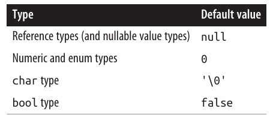
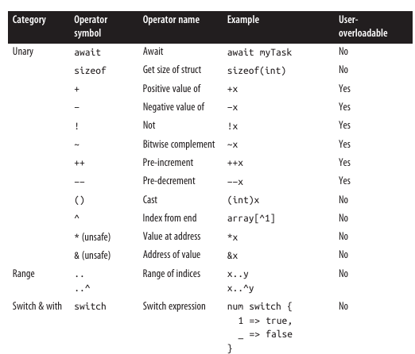
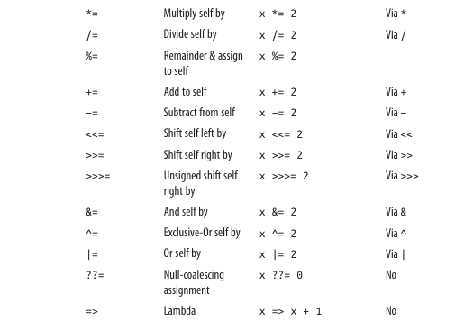

📝مبانی زبان #C
در این فصل، مبانی پایهای زبان سیشارپ را معرفی میکنیم. تقریباً تمامی لیستهای کد ارائهشده در این کتاب، به صورت نمونههای تعاملی در LINQPad قابل دسترسی هستند. کار کردن با این نمونهها در کنار مطالعهٔ کتاب، روند یادگیری را تسریع میکند، چرا که میتوانید کدها را ویرایش کرده و بلافاصله نتایج را مشاهده کنید بدون نیاز به تنظیم پروژهها یا Solutionها در ویژوال استودیو.
برای دانلود نمونهها، در LINQPad روی تب Samples کلیک کنید، سپس گزینهٔ "Download more samples" را انتخاب نمایید. LINQPad رایگان است — برای دریافت به آدرس زیر مراجعه کنید:
http://www.linqpad.net
اولین برنامه سیشارپ
برنامه زیر عدد ۱۲ را در ۳۰ ضرب کرده و نتیجه (۳۶۰) را روی صفحه نمایش میدهد. علامت // نشاندهنده توضیحات (کامنت) است:
int x = 12 * 30; // عبارت ۱
System.Console.WriteLine(x); // عبارت ۲
برنامه ما از دو عبارت تشکیل شده است. عبارات در سیشارپ به ترتیب اجرا شده و با سمیکولن (;) پایان مییابند.
عبارت اول حاصل ضرب 12 * 30 را محاسبه کرده و نتیجه را در متغیری به نام x از نوع int (عدد صحیح ۳۲ بیتی) ذخیره میکند.
عبارت دوم متد WriteLine را از کلاس Console (تعریفشده در فضای نام System) فراخوانی میکند که مقدار x را در پنجره خروجی نمایش میدهد.
توضیح مفاهیم کلیدی متد (Method): یک تابع که وظیفه خاصی را انجام میدهد (مثل WriteLine).
کلاس (Class): بلوک سازنده شیءگرایی که شامل متدها و دادههاست (مثل Console).
فضای نام (Namespace): راهی برای سازماندهی انواع (Types) در سطوح بالاتر. بسیاری از کلاسهای پرکاربرد (مثل Console) در فضای نام System قرار دارند.
مثال:
System.Text برای کار با متن.
System.IO برای عملیات ورودی/خروجی.
بهینهسازی کد با using
برای جلوگیری از تکرار System.Console میتوان از دستور using استفاده کرد:
using System; // وارد کردن فضای نام System
Console.WriteLine(x); // دیگر نیازی به نوشتن System. نیست
استفاده مجدد از کد با متدها میتوان با تعریف متدهای سطح بالا (مثل تبدیل فوت به اینچ) کد را بهینهتر کرد:
Console.WriteLine(FeetToInches(30)); // خروجی: 360
Console.WriteLine(FeetToInches(100)); // خروجی: 1200
int FeetToInches(int feet)
{
int inches = feet * 12;
return inches;
}
بلوک عبارت: مجموعهای از دستورات داخل آکولاد {}.
پارامتر ورودی و خروجی: متد FeetToInches یک پارامتر (feet) و مقدار بازگشتی (inches) دارد.
متدهای بدون ورودی/خروجی اگر متدی ورودی نداشته باشد، از پرانتز خالی استفاده میکنیم.
اگر خروجی نداشته باشد، از void استفاده میشود:
SayHello();
void SayHello()
{
Console.WriteLine("Hello, world");
}
انواع توابع در سیشارپ متدها (مثل FeetToInches).
عملگرها (مثل * برای ضرب).
سایر موارد: سازندهها (Constructors)، ویژگیها (Properties)، رویدادها (Events)، ایندکسرها (Indexers) و فاینالایزرها (Finalizers).
کامپایل
کامپایلر سیشارپ کد منبع (مجموعهای از فایلها با پسوند .cs) را به یک اَسمبلی (assembly) کامپایل میکند. یک اَسمبلی، واحد بستهبندی و استقرار در .NET است. یک اَسمبلی میتواند یک برنامه یا یک کتابخانه باشد. یک برنامه کنسول یا ویندوز معمولی دارای یک نقطه ورود است، در حالی که یک کتابخانه اینگونه نیست. هدف یک کتابخانه این است که توسط یک برنامه یا توسط کتابخانههای دیگر فراخوانی (ارجاع) شود. خود .NET مجموعهای از کتابخانهها (و همچنین یک محیط زمان اجرا) است.
هر یک از برنامههای بخش قبلی مستقیماً با مجموعهای از دستورات (به نام دستورات سطح بالا) آغاز شدند. وجود دستورات سطح بالا به طور ضمنی یک نقطه ورود برای یک برنامه کنسول یا ویندوز ایجاد میکند. (بدون دستورات سطح بالا، متد Main نقطه ورود یک برنامه را نشان میدهد—به "انواع سفارشی" در صفحه ۳۷ مراجعه کنید.)
برخلاف .NET Framework، اَسمبلیهای .NET 8 هرگز پسوند .exe ندارند. فایل .exe که پس از ساخت یک برنامه .NET 8 میبینید، یک لودر بومی (native loader) مخصوص پلتفرم است که مسئول راهاندازی اسمبلی .dll برنامه شما میباشد.
.NET 8 همچنین به شما اجازه میدهد یک استقرار مستقل (self-contained deployment) ایجاد کنید که شامل لودر، اسمبلیهای شما، و بخشهای مورد نیاز از زمان اجرای .NET باشد—همه در یک فایل .exe واحد. .NET 8 همچنین امکان کامپایل پیش از موعد (AOT) را فراهم میکند، که در آن فایل اجرایی حاوی کد بومی از پیش کامپایل شده برای راهاندازی سریعتر و کاهش مصرف حافظه است.
ابزار dotnet (در ویندوز dotnet.exe) به شما کمک میکند کدهای منبع و باینریهای .NET را از طریق خط فرمان مدیریت کنید. میتوانید از آن برای ساخت و اجرای برنامه خود استفاده کنید، به عنوان جایگزینی برای استفاده از یک محیط توسعه یکپارچه (IDE) مانند ویژوال استودیو یا ویژوال استودیو کد.
میتوانید ابزار dotnet را یا با نصب .NET 8 SDK یا با نصب ویژوال استودیو به دست آورید. مکان پیشفرض آن در ویندوز %ProgramFiles%\dotnet و در اوبونتو لینوکس /usr/bin/dotnet است. برای کامپایل یک برنامه، ابزار dotnet به یک فایل پروژه و همچنین یک یا چند فایل سیشارپ نیاز دارد. دستور زیر یک پروژه کنسول جدید را راهاندازی میکند (ساختار پایه آن را ایجاد میکند):
dotnet new Console -n MyFirstProgram
این دستور یک زیرپوشه به نام MyFirstProgram ایجاد میکند که شامل یک فایل پروژه به نام MyFirstProgram.csproj و یک فایل سیشارپ به نام Program.cs است که عبارت "Hello world." را چاپ میکند.
برای ساخت و اجرای برنامه خود، دستور زیر را از پوشه MyFirstProgram اجرا کنید:
dotnet run MyFirstProgram
یا، اگر فقط میخواهید بدون اجرا بسازید:
dotnet build MyFirstProgram.csproj
خروجی اسمبلی در یک زیردایرکتوری تحت bindebug نوشته خواهد شد. ما در فصل 17 به تفصیل درباره اسمبلیها توضیح میدهیم.
Syntax
نحو سیشارپ از نحو زبانهای C و C++ الهام گرفته شده است. در این بخش، ما عناصر نحو سیشارپ را با استفاده از برنامه زیر توضیح میدهیم:
using System;
int x = 12 * 30;
Console.WriteLine (x);
شناسهها و کلمات کلیدی
شناسهها (Identifiers) نامهایی هستند که برنامهنویسان برای کلاسها، متدها، متغیرها و غیره انتخاب میکنند. در برنامه مثال ما، شناسهها به ترتیب ظاهر شدنشان عبارتند از:
یک شناسه باید یک کلمه کامل باشد که اساساً از کاراکترهای یونیکد تشکیل شده و با یک حرف یا زیرخط شروع میشود. شناسههای سیشارپ به حروف حساس هستند (case sensitive). طبق قرارداد، پارامترها، متغیرهای محلی، و فیلدهای خصوصی باید به کمل کِیس (camel case) باشند (مثلاً myVariable)، و سایر شناسهها باید به پاسکال کِیس (Pascal case) باشند (مثلاً MyMethod).
کلمات کلیدی (Keywords) نامهایی هستند که برای کامپایلر معنای خاصی دارند. در برنامه مثال ما دو کلمه کلیدی وجود دارد: using و int.
بیشتر کلمات کلیدی رزرو شده هستند، به این معنی که نمیتوانید از آنها به عنوان شناسه استفاده کنید. در اینجا لیست کامل کلمات کلیدی رزرو شده سیشارپ آمده است:
as double public sealed
base else readonly short
bool enum record sizeof
break event ref stackalloc
byte explicit return static
case extern float string
catch false for struct
char finally foreach switch
checked fixed goto this
class if throw true
const implicit try typeof
continue in uint ulong
decimal int unchecked unsafe
default interface ushort using
delegate internal virtual void
is volatile while
lock
long
namespace
new
null
object
operator
out
override
params
private
اگر واقعاً میخواهید از شناسهای استفاده کنید که با یک کلمه کلیدی رزرو شده تداخل دارد، میتوانید با استفاده از پیشوند @ این کار را انجام دهید. برای مثال:
int using = 123; // غیرقانونی
int @using = 123; // قانونی
نماد @ بخشی از خود شناسه را تشکیل نمیدهد. بنابراین، @myVariable همان myVariable است.
کلمات کلیدی متنی
برخی از کلمات کلیدی متنی (contextual) هستند، به این معنی که میتوانید از آنها به عنوان شناسه نیز استفاده کنید—بدون نماد @:
alias dynamic group nuint required with
and equals init on select when
ascending file into or set where
async from join orderby unmanaged yield
await get let partial value
by managed nameof
با کلمات کلیدی متنی، ابهام نمیتواند در متنی که در آن استفاده میشوند، ایجاد شود.
ثابتها، نشانهگذارها و عملگرها
ثابتها (Literals) قطعات داده اولیهای هستند که به صورت لغوی در برنامه جاسازی شدهاند. ثابتهایی که در برنامه مثال ما استفاده کردیم ۱۲ و ۳۰ هستند.
نشانهگذارها (Punctuators) به جداسازی ساختار برنامه کمک میکنند. یک مثال سمیکولن است که یک دستور را به پایان میرساند. دستورات میتوانند چندین خط را در بر گیرند:
Console.WriteLine
(1 + 2 + 3 + 4 + 5 + 6 + 7 + 8 + 9 + 10);
یک عملگر (Operator) عبارتها را تبدیل و ترکیب میکند. بیشتر عملگرها در سیشارپ با یک نماد نشان داده میشوند، مانند عملگر ضرب، *. ما عملگرها را بعداً در این فصل با جزئیات بیشتری بحث خواهیم کرد. اینها عملگرهایی هستند که در برنامه مثال ما استفاده کردیم:
یک نقطه، عضویت چیزی را (یا نقطه اعشار را در ثابتهای عددی) نشان میدهد. پرانتزها هنگام اعلان یا فراخوانی یک متد استفاده میشوند؛ پرانتزهای خالی زمانی استفاده میشوند که متد هیچ آرگومانی را نمیپذیرد. (پرانتزها اهداف دیگری نیز دارند که بعداً در این فصل خواهید دید.) یک علامت مساوی عمل انتساب را انجام میدهد. (علامت مساوی دوبل، ==، مقایسه برابری را انجام میدهد، همانطور که بعداً خواهید دید.)
Comments
سیشارپ دو سبک مختلف مستندسازی کد منبع را ارائه میدهد: نظرات تکخطی و نظرات چندخطی. یک نظر تکخطی با دو اسلش رو به جلو آغاز میشود و تا پایان خط ادامه مییابد؛ برای مثال:
int x = 3; // Comment about assigning 3 to x
یک نظر چندخطی با /شروع شده و با/ به پایان میرسد؛ برای مثال:
int x = 3; /* This is a comment that
spans two lines */
نظرات میتوانند شامل تگهای مستندسازی XML باشند، که ما در "مستندسازی XML" در صفحه ۲۷۲ توضیح میدهیم.
مبانی Types
یک Type، طرح کلی (blueprint) برای یک value را تعریف میکند. در این مثال، ما از دو Literals از نوع int با مقادیر ۱۲ و ۳۰ استفاده میکنیم. همچنین یک variable از نوع int با نام x اعلان میکنیم:
int x = 12 * 30;
Console.WriteLine (x);
از آنجایی که بیشتر لیستهای کد در این کتاب به Types از Namespace System نیاز دارند، از این پس "using System" را حذف خواهیم کرد، مگر اینکه مفهومی مرتبط با Namespaces را نشان دهیم.
یک variable نشاندهنده یک مکان ذخیرهسازی است که میتواند در طول زمان حاوی مقادیر مختلفی باشد. در مقابل، یک Constant همیشه همان value را نمایش میدهد (در ادامه بیشتر در مورد آن صحبت خواهیم کرد):
const int y = 360;
تمام Values در C#، Instances یک Type هستند. معنای یک value و مجموعه مقادیر ممکن که یک variable میتواند داشته باشد، توسط Type آن تعیین میشود.
نمونههای Predefined Type
Predefined Types انواعی هستند که به طور خاص توسط Compiler پشتیبانی میشوند. Type int یک Predefined Type برای نمایش مجموعه اعداد صحیح است که در ۳۲ بیت حافظه جای میگیرند، از 2 31
- تا 2 31
-1، و Type پیشفرض برای Literals عددی در این محدوده است. میتوانید با Instances از Type int توابعی مانند عملیات حسابی را به صورت زیر انجام دهید:
int x = 12 * 30;
یک Predefined Type دیگر C#، string است. Type string یک توالی از Characterها را نمایش میدهد، مانند ".NET" یا http://oreilly.com. میتوانید با فراخوانی توابع روی Strings با آنها کار کنید، به صورت زیر:
string message = "Hello world";
string upperMessage = message.ToUpper();
Console.WriteLine (upperMessage); // HELLO WORLD
int x = 2022;
message = message + x.ToString();
Console.WriteLine (message); // Hello world2022
در این مثال، ما x.ToString() را فراخوانی کردیم تا یک نمایش رشتهای از عدد صحیح x به دست آوریم. میتوانید ToString() را روی یک variable از تقریباً هر Type فراخوانی کنید.
Type Predefined bool دقیقاً دو value ممکن دارد: true و false. Type bool معمولاً با یک if statement برای شاخهبندی شرطی جریان اجرا استفاده میشود:
bool simpleVar = false;
if (simpleVar)
Console.WriteLine ("This will not print");
int x = 5000;
bool lessThanAMile = x < 5280;
if (lessThanAMile)
Console.WriteLine ("This will print");
Custom Types
در C#، Predefined Types (که به آنها Built-in Types نیز گفته میشود) با یک C# Keyword شناخته میشوند. Namespace System در .NET حاوی بسیاری از Types مهم است که توسط C# Predefined نیستند (مثلاً DateTime).
همانطور که میتوانیم Methodهای خودمان را بنویسیم، میتوانیم Types خودمان را نیز بنویسیم. در مثال بعدی، ما یک Custom Type به نام UnitConverter تعریف میکنیم—یک Class که به عنوان طرح کلی برای تبدیل واحدها عمل میکند:
UnitConverter feetToInchesConverter = new UnitConverter (12);
UnitConverter milesToFeetConverter = new UnitConverter (5280);
Console.WriteLine (feetToInchesConverter.Convert(30)); // 360
Console.WriteLine (feetToInchesConverter.Convert(100)); // 1200
Console.WriteLine (feetToInchesConverter.Convert(
milesToFeetConverter.Convert(1))); // 63360
public class UnitConverter
{
int ratio; // Field
public UnitConverter (int unitRatio) // Constructor
{
ratio = unitRatio;
}
public int Convert (int unit) // Method
{
return unit * ratio;
}
}
در این مثال، تعریف Class ما در همان فایل دستورات سطح بالای ما ظاهر میشود. این قانونی است—تا زمانی که دستورات سطح بالا ابتدا ظاهر شوند—و هنگام نوشتن برنامههای آزمایشی کوچک قابل قبول است. در برنامههای بزرگتر، رویکرد استاندارد این است که تعریف Class را در یک فایل جداگانه مانند UnitConverter.cs قرار دهیم.
اعضای یک نوع (Members of a type)
یک نوع (Type) شامل اعضای دادهای (data members) و اعضای تابعی (function members) است. عضو دادهای کلاس UnitConverter فیلدی به نام ratio است. اعضای تابعی آن نیز شامل متد Convert و سازندهی (constructor) کلاس UnitConverter میباشند.
تقارن بین نوعهای از پیش تعریفشده و نوعهای سفارشی
(Symmetry of predefined types and custom types)
یکی از جنبههای زیبای #C این است که بین نوعهای از پیش تعریفشده (مثل int) و نوعهایی که خودمان تعریف میکنیم (custom types) تفاوت چندانی وجود ندارد.
برای مثال، نوع int به عنوان یک الگو برای عددهای صحیح عمل میکند. این نوع داده ذخیره میکند — یعنی ۳۲ بیت اطلاعات — و اعضای تابعی دارد که از این داده استفاده میکنند، مانند متد ToString.
بهطور مشابه، نوع سفارشی UnitConverter که خودمان تعریف کردیم، الگوی تبدیل واحد است. این نوع هم دادهای نگه میدارد — نسبت یا همان ratio — و اعضای تابعیای دارد که از این داده استفاده میکنند.
سازندهها و ایجاد نمونه (Constructors and instantiation)
دادهها از طریق ایجاد نمونهای از یک نوع (instantiating a type) ساخته میشوند.
نوعهای از پیش تعریفشده را میتوان تنها با استفاده از لیترالها (literals) ایجاد کرد؛ مانند 12 یا "Hello world".
اما برای ایجاد نمونهای از یک نوع سفارشی، باید از عملگر new استفاده کنیم. مثلاً این دستور یک نمونه از کلاس UnitConverter ایجاد میکند:
UnitConverter feetToInchesConverter = new UnitConverter(12);
بلافاصله بعد از اینکه new یک شیء را ایجاد کرد، سازندهی آن شیء فراخوانی میشود تا مقداردهی اولیه انجام شود.
سازندهها مشابه متدها تعریف میشوند، با این تفاوت که نام متد همان نام کلاس است و نوع بازگشتی (return type) ندارد:
public UnitConverter(int unitRatio) {
ratio = unitRatio;
}
اعضای نمونهای در برابر اعضای ایستا
(Instance versus static members)
اعضای دادهای و تابعی که روی یک نمونه از نوع عمل میکنند، اعضای نمونهای (instance members) نامیده میشوند.
برای مثال، متد Convert در کلاس UnitConverter و متد ToString در int اعضای نمونهای هستند. بهطور پیشفرض، تمام اعضا، نمونهای هستند.
اما اگر عضوهایی وجود داشته باشند که مستقیماً به نمونهای نیاز نداشته باشند، میتوان آنها را به عنوان static (ایستا) علامتگذاری کرد.
برای استفاده از عضو ایستا از بیرون، باید نام نوع را مشخص کنیم نه نام نمونه.
مثال: متد WriteLine در کلاس Console یک متد ایستا است، بنابراین آن را اینگونه صدا میزنیم:
Console.WriteLine();
نه به صورت:
new Console().WriteLine(); // نادرست
در واقع، کلاس Console بهطور کامل بهصورت static تعریف شده است. یعنی تمام اعضای آن ایستا هستند و شما هرگز نمیتوانید یک شیء از Console بسازید.
مثال از تفاوت عضو نمونهای و ایستا: در کد زیر، فیلد Name مربوط به نمونه خاصی از پاندا است، در حالی که فیلد Population مربوط به تمام پاندای ساختهشده است:
Panda p1 = new Panda("Pan Dee");
Panda p2 = new Panda("Pan Dah");
Console.WriteLine(p1.Name); // Pan Dee
Console.WriteLine(p2.Name); // Pan Dah
Console.WriteLine(Panda.Population); // 2
کلاس Panda به صورت زیر تعریف شده:
public class Panda
{
public string Name; // فیلد نمونهای
public static int Population; // فیلد ایستا (مشترک بین همه)
public Panda(string n) // سازنده
{
Name = n;
Population = Population + 1;
}
}
اگر سعی کنیم p1.Population یا Panda.Name را فراخوانی کنیم، خطای زمان کامپایل خواهیم گرفت، چون هر کدام فقط به شیوه خاص خود قابل دسترسی هستند.
کلیدواژهی public
کلیدواژهی public اعضا را برای سایر کلاسها قابل مشاهده و دسترسی میکند.
اگر در کلاس Panda، فیلد Name را به صورت public تعریف نکنیم، به صورت پیشفرض private خواهد بود و از بیرون کلاس قابل دسترسی نخواهد بود.
استفاده از public یعنی:
«من میخوام این عضو برای سایر کلاسها قابل دیدن و استفاده باشه؛ باقی چیزها جزئیات داخلی خودمن.»
در مفاهیم شیءگرایی (OOP) میگوییم اعضای public، اعضای private را کپسولهسازی (encapsulate) میکنند.
تعریف فضای نام (Defining namespaces)
در برنامههای بزرگ، منطقیه که کلاسها رو داخل namespaceهای مشخص قرار بدیم.
مثال:
using System;
using Animals;
Panda p = new Panda("Pan Dee");
Console.WriteLine(p.Name);
namespace Animals
{
public class Panda
{
...
}
}
در اینجا، ما فضای نام Animals رو وارد کردیم، تا نیازی به استفاده کامل از اسم نباشه.
اگه اون using رو نمینوشتیم، باید اینطور مینوشتیم:
Animals.Panda p = new Animals.Panda("Pan Dee");
در ادامهی فصل، بحث فضای نام بهصورت کامل در صفحه ۹۵ بررسی میشه.
تعریف متد Main
(Defining a Main method)
تا اینجای کار، تمام مثالهای ما از دستورات سطح بالا (top-level statements) استفاده میکردند — ویژگیای که در C# 9 معرفی شد.
اما بدون استفاده از دستورات سطح بالا، ساختار یک برنامه ساده کنسولی یا ویندوزی به این صورت خواهد بود:
using System;
class Program
{
static void Main() // نقطه ورود برنامه
{
int x = 12 * 30;
Console.WriteLine(x);
}
}
در صورت نبود دستورات سطح بالا، کامپایلر #C به دنبال یک متد ایستا به نام Main میگردد که نقش نقطهی ورود (entry point) برنامه را ایفا میکند.
این متد Main میتواند در هر کلاسی تعریف شود، اما فقط یک Main در برنامه مجاز است.
برگشت مقدار از Main (اختیاری) متد Main میتواند بهجای void، یک عدد صحیح (int) برگرداند. این عدد میتواند به محیط اجرایی برگردانده شود تا وضعیت اجرای برنامه مشخص شود:
اگر مقدار بازگشتی 0 باشد، یعنی اجرا موفق بوده؛
اگر مقدار بازگشتی غیراز صفر باشد، معمولاً نشاندهندهی یک خطا است.
دریافت آرگومانهای خط فرمان (Command Line Arguments) متد Main میتواند آرایهای از رشتهها (string[]) به عنوان ورودی بگیرد. این آرایه، شامل آرگومانهایی است که هنگام اجرای فایل اجرایی به برنامه پاس داده شدهاند.
مثال:
static int Main(string[] args)
{
// استفاده از args[0] و غیره
}
توضیحی دربارهی آرایهها
یک آرایه (Array) مثل string[] نشاندهندهی تعدادی مقدار از یک نوع خاص است. برای تعریف آرایه، از علامت براکت [] بعد از نوع داده استفاده میکنیم.
آرایهها به طور کامل در بخش "آرایهها" در صفحه ۶۱ توضیح داده میشوند.
پشتیبانی از برنامهنویسی ناهمگام (Async Main)
متد Main همچنین میتواند به صورت async (ناهمگام) تعریف شود و مقدار بازگشتی آن میتواند از نوع Task یا Task< int > باشد.
این قابلیت، به برنامهنویسی ناهمگام (asynchronous programming) کمک میکند و بهطور کامل در فصل ۱۴ بررسی خواهد شد.
دستورات سطح بالا (Top-Level Statements)
دستورات سطح بالا (که در #C نسخه ۹ معرفی شدند) به شما اجازه میدهند تا از نوشتن متد Main به صورت ایستا و کلاس نگهدارندهی آن صرفنظر کنید. یک فایل که از دستورات سطح بالا استفاده میکند، شامل سه بخش به ترتیب زیر است:
(اختیاری) دستورات using
مجموعهای از دستورات که میتواند شامل تعریف متدها نیز باشد (اختیاری)
(اختیاری) تعریف نوعها و فضای نامها
مثال:
using System; // بخش ۱
Console.WriteLine("Hello, world"); // بخش ۲
void SomeMethod1() { ... } // بخش ۲
Console.WriteLine("Hello again!"); // بخش ۲
void SomeMethod2() { ... } // بخش ۲
class SomeClass { ... } // بخش ۳
namespace SomeNamespace { ... } // بخش ۳
از آنجا که CLR (Common Language Runtime) بهطور صریح از دستورات سطح بالا پشتیبانی نمیکند، کامپایلر کد شما را به چیزی مانند زیر ترجمه میکند:
using System; // بخش ۱
static class Program$ // نام ویژهای که توسط کامپایلر تولید شده
{
static void Main$ (string[] args) // نام تولیدشده توسط کامپایلر
{
Console.WriteLine("Hello, world"); // بخش ۲
void SomeMethod1() { ... } // بخش ۲
Console.WriteLine("Hello again!"); // بخش ۲
void SomeMethod2() { ... } // بخش ۲
}
}
class SomeClass { ... } // بخش ۳
namespace SomeNamespace { ... } // بخش ۳
توجه کنید که تمام محتوای بخش ۲ درون متد Main قرار میگیرد. این یعنی SomeMethod1 و SomeMethod2 بهعنوان متدهای محلی (local methods) عمل میکنند.
ما در بخش «متدهای محلی» در صفحه ۱۰۶ بهطور کامل در مورد این موضوع صحبت خواهیم کرد. مهمترین نکته این است که متدهای محلی (مگر اینکه به صورت static تعریف شده باشند) میتوانند به متغیرهایی که درون متد احاطهکننده تعریف شدهاند، دسترسی داشته باشند:
int x = 3;
LocalMethod();
void LocalMethod() { Console.WriteLine(x); } // میتوانیم به x دسترسی داشته باشیم
یک نتیجه دیگر این است که متدهای سطح بالا قابل دسترسی از سایر کلاسها یا نوعها نیستند.
دستورات سطح بالا میتوانند بهصورت اختیاری یک مقدار عدد صحیح (int) به فراخواننده بازگردانند و به یک متغیر خاص از نوع string[] به نام args دسترسی داشته باشند، که معادل آرگومانهای خط فرمانی است که توسط فراخواننده به برنامه داده شدهاند.
از آنجا که فقط یک نقطه ورود برای برنامه میتواند وجود داشته باشد، در یک پروژه #C حداکثر فقط یک فایل میتواند شامل دستورات سطح بالا باشد.
نوعها و تبدیلها
(Types and Conversions)
زبان C# میتواند بین نمونههایی از نوعهای سازگار، تبدیل انجام دهد. هر تبدیل، همیشه یک مقدار جدید از روی یک مقدار موجود میسازد.
تبدیلها میتوانند ضمنی (implicit) یا صریح (explicit) باشند:
تبدیل ضمنی به صورت خودکار انجام میشود.
تبدیل صریح نیاز به عملگر تبدیل (cast) دارد.
در مثال زیر، ما بهطور ضمنی یک int را به long (که دو برابر ظرفیت بیتی دارد) تبدیل میکنیم، و سپس بهطور صریح یک int را به short (که نصف ظرفیت بیتی دارد) تبدیل میکنیم:
int x = 12345; // int یک عدد صحیح ۳۲ بیتی است
long y = x; // تبدیل ضمنی به عدد صحیح ۶۴ بیتی
short z = (short)x; // تبدیل صریح به عدد صحیح ۱۶ بیتی
تبدیلهای ضمنی در صورتی مجاز هستند که هر دو شرط زیر برقرار باشد:
کامپایلر میتواند تضمین کند که تبدیل همیشه موفق خواهد بود.
هیچ اطلاعاتی در طول تبدیل از دست نمیرود.¹
در مقابل، تبدیلهای صریح زمانی مورد نیاز هستند که یکی از شرایط زیر وجود داشته باشد:
کامپایلر نمیتواند تضمین کند که تبدیل همیشه موفق خواهد بود.
ممکن است اطلاعاتی در طول تبدیل از دست برود.
اگر کامپایلر تشخیص دهد که یک تبدیل همیشه شکست میخورد، هر دو نوع تبدیل (ضمنی و صریح) ممنوع خواهند بود.
تبدیلهایی که شامل نوعهای generic هستند هم ممکن است تحت شرایط خاصی شکست بخورند — به بخش «Type Parameters and Conversions» در صفحه ۱۶۶ مراجعه کنید.
تبدیلهای عددی که در بالا دیدیم، بهصورت ذاتی در زبان C# تعریف شدهاند. C# همچنین از موارد زیر پشتیبانی میکند:
تبدیل ارجاعی (reference conversions)
تبدیل باکسینگ (boxing conversions) (در فصل ۳ توضیح داده میشوند)
و همچنین تبدیلهای سفارشی (custom conversions) (در بخش «Operator Overloading» در صفحه ۲۵۶ توضیح داده شده)
کامپایلر، قوانین بالا را برای تبدیلهای سفارشی تضمین نمیکند؛ پس ممکن است نوعهایی که بد طراحی شدهاند، رفتار غیرمنتظرهای داشته باشند.
¹ یک نکتهی جزئی: مقادیر long بسیار بزرگ، هنگام تبدیل به double، ممکن است کمی دقت (precision) را از دست بدهند.
نوعهای مقداری در برابر نوعهای ارجاعی
(Value Types Versus Reference Types)
تمام نوعهای C# در یکی از دستههای زیر قرار میگیرند:
نوعهای مقداری (Value types)
نوعهای ارجاعی (Reference types)
پارامترهای نوعی (Generic type parameters)
نوعهای اشارهگر (Pointer types)
در این بخش، ما دربارهی نوعهای مقداری و نوعهای ارجاعی صحبت میکنیم.
پارامترهای نوعی در بخش «Generics» در صفحه ۱۵۹ و نوعهای اشارهگر در بخش «Unsafe Code and Pointers» در صفحه ۲۶۳ پوشش داده میشوند.
نوعهای مقداری شامل بیشتر نوعهای داخلی هستند؛ بهویژه:
تمام نوعهای عددی
نوع char
نوع bool
و همچنین نوعهای سفارشی مانند struct و enum
نوعهای ارجاعی شامل موارد زیر میشوند:
تمام کلاسها (class)
آرایهها (array)
نمایندهها (delegate)
رابطها (interface) (شامل نوع string که به صورت داخلی تعریف شده نیز میشود)
تفاوت اصلی بین نوعهای مقداری و ارجاعی، نحوهی مدیریت آنها در حافظه است.
نوعهای مقداری (Value Types)
محتوای یک متغیر یا ثابت از نوع مقداری، صرفاً یک مقدار است. برای مثال، محتوای نوع int (که یکی از نوعهای داخلی مقداری است)، فقط شامل ۳۲ بیت داده است.
میتوانی یک نوع مقداری سفارشی را با استفاده از کلیدواژهی struct تعریف کنی (به شکل زیر که در شکل ۲-۱ نمایش داده شده):
public struct Point { public int X; public int Y; }
یا بهشکل مختصرتر:
public struct Point { public int X, Y; }
📌 شکل ۲-۱. نمونهای از یک نوع مقداری در حافظه

وقتی یک نمونه از نوع مقداری را به متغیر دیگری اختصاص میدهی (assign)،
تمام مقدار آن کپی میشود. برای مثال:
Point p1 = new Point();
p1.X = 7;
Point p2 = p1; // انتساب باعث کپی کامل میشود
Console.WriteLine(p1.X); // 7
Console.WriteLine(p2.X); // 7
p1.X = 9; // تغییر مقدار p1.X
Console.WriteLine(p1.X); // 9
Console.WriteLine(p2.X); // 7
📌 شکل ۲-۲ نشان میدهد که p1 و p2 فضای ذخیرهسازی مستقلی دارند.

📌 یعنی هر کدام در حافظه جداگانه نگهداری میشوند و تغییر یکی روی دیگری اثری ندارد.
نوعهای ارجاعی (Reference Types)
یک نوع ارجاعی از نوعهای مقداری پیچیدهتر است و از دو بخش تشکیل شده:
یک شیء (object)
و یک ارجاع (reference) به آن شیء
محتوای یک متغیر یا ثابت از نوع ارجاعی، ارجاعی به یک شیء است که آن مقدار را در خود دارد.
در اینجا، نوع Point را که قبلاً بهصورت struct داشتیم، این بار بهصورت class بازنویسی میکنیم:
(در شکل ۲-۳ نشان داده شده)
public class Point { public int X, Y; }
📌 شکل ۲-۳. نمونهای از نوع ارجاعی در حافظه

زمانی که یک متغیر از نوع ارجاعی را به متغیر دیگری اختصاص میدهیم، فقط ارجاع کپی میشود، نه خود شیء.
این موضوع باعث میشود که چندین متغیر به یک شیء واحد اشاره کنند — چیزی که در نوعهای مقداری امکانپذیر نیست.
اگر همان مثال قبلی را با Point بهصورت class اجرا کنیم، عملیات روی p1 روی p2 نیز اثر میگذارد:
Point p1 = new Point();
p1.X = 7;
Point p2 = p1; // کپی شدن ارجاع (نه شیء)
Console.WriteLine(p1.X); // 7
Console.WriteLine(p2.X); // 7
p1.X = 9; // تغییر مقدار X از طریق p1
Console.WriteLine(p1.X); // 9
Console.WriteLine(p2.X); // 9
📌 شکل ۲-۴ نشان میدهد که p1 و p2 دو ارجاع هستند که به یک شیء مشترک اشاره میکنند.

📌 در نتیجه تغییر یکی، روی دیگری هم تأثیر دارد.
Null
یک Reference را میتوان با Literal null مقداردهی کرد، که نشان میدهد Reference به هیچ شیء(Object) اشاره نمیکند:
Point p = null;
Console.WriteLine (p == null); // True
// The following line generates a runtime error
// (a NullReferenceException is thrown):
Console.WriteLine (p.X);
class Point {...}
در "Nullable Reference Types" در صفحه ۲۱۵، ما ویژگیای از C# را شرح میدهیم که به کاهش خطاهای تصادفی NullReferenceException کمک میکند.
در مقابل، یک Value Type به طور معمول نمیتواند مقدار null داشته باشد:
Point p = null; // Compile-time error
int x = null; // Compile-time error
struct Point {...}
C# همچنین ساختاری به نام Nullable Value Types برای نمایش nullهای Value Type دارد. برای اطلاعات بیشتر، به "Nullable Value Types" در صفحه ۲۱۰ مراجعه کنید.
Storage Overhead
Instances انواع Value Type دقیقاً حافظه مورد نیاز برای ذخیره Fields خود را اشغال میکنند. در این مثال، Point، ۸ بایت حافظه میگیرد:
struct Point
{
int x; // 4 bytes
int y; // 4 bytes
}
از نظر فنی، CLR Fields را در Type در آدرسی قرار میدهد که مضربی از اندازه Fields است (حداکثر ۸ بایت). بنابراین، مثال زیر در واقع ۱۶ بایت حافظه مصرف میکند (با ۷ بایت پس از Field اول "تلف شده"):
struct A { byte b; long l; }
میتوانید این رفتار را با اعمال Attribute StructLayout نادیده بگیرید (به "Mapping a Struct to Unmanaged Memory" در صفحه ۹۹۷ مراجعه کنید).
Reference Types نیاز به تخصیصهای جداگانه حافظه برای Reference و Object دارند. Object به اندازه Fields خود به علاوه سربار اداری اضافی، بایت مصرف میکند. سربار دقیقاً به طور ذاتی برای پیادهسازی .NET runtime خصوصی است، اما حداقل، این سربار ۸ بایت است، که برای ذخیره یک کلید به Type Object و همچنین اطلاعات موقت مانند وضعیت Lock آن برای Multithreading و یک پرچم برای نشان دادن اینکه آیا از حرکت توسط Garbage Collector ثابت شده است، استفاده میشود. هر Reference به یک Object به ۴ یا ۸ بایت اضافی نیاز دارد، بسته به اینکه .NET runtime روی پلتفرم ۳۲ یا ۶۴ بیتی در حال اجرا باشد.
Predefined Type Taxonomy
Predefined Types در C# به شرح زیر هستند:
-
Value Types
-
Numeric
Signed integer (sbyte, short, int, long)
Unsigned integer (byte, ushort, uint, ulong)
Real number (float, double, decimal)
-
Logical (bool)
-
Character (char)
-
-
Reference Types
-
String (string)
-
Object (object)
-
Predefined Types در C# در واقع Alias برای .NET Types در Namespace System هستند. تنها یک تفاوت Syntactic بین این دو دستور وجود دارد:
int i = 5;
System.Int32 i = 5;
مجموعه Predefined Value Types به استثنای decimal به عنوان Primitive Types در CLR شناخته میشوند. Primitive Types به این دلیل نامگذاری شدهاند که مستقیماً از طریق Instructions در کد Compile شده پشتیبانی میشوند، و این معمولاً به پشتیبانی مستقیم در Processor زیربنایی ترجمه میشود؛ برای مثال:
// Underlying hexadecimal representation
int i = 7; // 0x7
bool b = true; // 0x1
char c = 'A'; // 0x41
float f = 0.5f; // uses IEEE floating-point encoding
Types System.IntPtr و System.UIntPtr نیز Primitive هستند (به Chapter 24 مراجعه کنید).
Numeric Types
C# دارای Predefined Numeric Types است که در Table 2-1 نشان داده شدهاند.
Table 2-1. Predefined numeric types in C#

از بین Real Number Types، float و double را Floating-Point Types2 مینامند و معمولاً برای محاسبات علمی و گرافیکی استفاده میشوند. Type decimal معمولاً برای محاسبات مالی به کار میرود، که در آنها محاسبات با دقت Base-10 و دقت بالا مورد نیاز است.
.NET این لیست را با چندین Specialized Numeric Type تکمیل میکند، از جمله Int128 و UInt128 برای ۱۲۸-bit Signed و Unsigned Integers، BigInteger برای Integers با اندازههای دلخواه بزرگ، و Half برای ۱۶-bit Floating Point Numbers. Half عمدتاً برای Interoperability با Processors کارت گرافیک در نظر گرفته شده است و در بیشتر CPUs پشتیبانی Native ندارد، که float و double را به گزینههای بهتری برای استفاده عمومی تبدیل میکند.
Numeric Literals
Literals از نوع Integral میتوانند از Decimal یا Hexadecimal Notation استفاده کنند؛ Hexadecimal با پیشوند 0x نشان داده میشود. برای مثال:
int x = 127;
long y = 0x7F;
میتوانید یک Underscore را در هر کجای یک Numeric Literal قرار دهید تا خواناتر شود:
int million = 1_000_000;
میتوانید اعداد را به صورت Binary با پیشوند 0b مشخص کنید:
var b = 0b1010_1011_1100_1101_1110_1111;
Real Literals میتوانند از Decimal و/یا Exponential Notation استفاده کنند:
double d = 1.5;
double million = 1E06;
Numeric Literal Type Inference
به طور پیشفرض، Compiler یک Numeric Literal را به صورت double یا یک Integral Type استنباط میکند:
-
اگر Literal شامل یک Decimal Point یا نماد Exponential (E) باشد، یک double است.
-
در غیر این صورت، Type Literal اولین Type در این لیست است که میتواند Value Literal را در خود جای دهد: int, uint, long, و ulong.
برای مثال:
از نظر فنی، decimal نیز یک Floating-Point Type است، اگرچه در Specification زبان C# به این نام از آن یاد نمیشود.
Console.WriteLine ( 1.0.GetType()); // Double (double)
Console.WriteLine ( 1E06.GetType()); // Double (double)
Console.WriteLine ( 1.GetType()); // Int32 (int)
Console.WriteLine ( 0xF0000000.GetType()); // UInt32 (uint)
Console.WriteLine (0x100000000.GetType()); // Int64 (long)
پسوندهای Numeric
Numeric Suffixes به طور صریح Type یک Literal را تعریف میکنند. Suffixes میتوانند حروف کوچک یا بزرگ باشند، و به شرح زیر هستند:

long i = 5; // Implicit lossless conversion from int literal to long
پسوند D از نظر فنی اضافی است، زیرا تمام Literals دارای Decimal Point به صورت double استنباط میشوند. و شما همیشه میتوانید یک Decimal Point به یک Numeric Literal اضافه کنید:
double x = 4.0;
پسوندهای F و M مفیدترین هستند و همیشه باید هنگام مشخص کردن Literals از نوع float یا decimal اعمال شوند. بدون پسوند F، خط زیر کامپایل نمیشود، زیرا 4.5 به عنوان Type double استنباط میشود، که هیچ Implicit Conversion به float ندارد:
float f = 4.5F;
همین اصل برای یک decimal Literal نیز صادق است:
decimal d = -1.23M; // Will not compile without the M suffix.
ما Semantics مربوط به Numeric Conversions را با جزئیات در بخش بعدی شرح میدهیم.
Numeric Conversions
تبدیل بین Integral Types
Integral Type Conversions زمانی Implicit هستند که Type مقصد بتواند هر Value ممکن از Type منبع را نمایش دهد. در غیر این صورت، یک Explicit Conversion مورد نیاز است؛ برای مثال:
int x = 12345; // int is a 32-bit integer
long y = x; // Implicit conversion to 64-bit integral type
short z = (short)x; // Explicit conversion to 16-bit integral type
تبدیل بین Floating-Point Types
یک float میتواند به طور Implicit به یک double تبدیل شود، با توجه به اینکه یک double میتواند هر Value ممکن از یک float را نمایش دهد. تبدیل معکوس باید Explicit باشد.
تبدیل بین Floating-Point و Integral Types
تمام Integral Types میتوانند به طور Implicit به تمام Floating-Point Types تبدیل شوند:
int i = 1;
float f = i;
تبدیل معکوس باید Explicit باشد:
int i2 = (int)f;
هنگامی که از یک Floating-Point Number به یک Integral Type Cast میکنید، هر بخش کسری Truncated میشود؛ هیچ Rounding انجام نمیشود. Static Class System.Convert متدهایی را فراهم میکند که هنگام تبدیل بین انواع Numeric مختلف Rounding را انجام میدهند (به Chapter 6 مراجعه کنید).
تبدیل Implicit یک Integral Type بزرگ به یک Floating-Point Type، Magnitude را حفظ میکند اما گاهی اوقات میتواند Precision را از دست بدهد. این به این دلیل است که Floating-Point Types همیشه Magnitude بیشتری نسبت به Integral Types دارند اما میتوانند Precision کمتری داشته باشند. بازنویسی مثال ما با یک عدد بزرگتر این را نشان میدهد:
int i1 = 100000001;
float f = i1; // Magnitude preserved, precision lost
int i2 = (int)f; // 100000000
تبدیلهای Decimal
تمام Integral Types میتوانند به طور Implicit به Type decimal تبدیل شوند، با توجه به اینکه یک decimal میتواند هر C# Integral-Type Value ممکن را نمایش دهد. تمام Numeric Conversions دیگر به و از یک Type decimal باید Explicit باشند، زیرا آنها امکان خارج از محدوده بودن Value یا از دست رفتن Precision را معرفی میکنند.
Arithmetic Operators
Arithmetic Operators (+, -, *, /, %) برای تمام Numeric Types به جز Integral Types 8 و 16 بیتی تعریف شدهاند:
-
Addition
-
Subtraction
-
Multiplication
/ Division
% Remainder after division
Increment و Decrement Operators
Increment و Decrement Operators (به ترتیب ++، --) Numeric Types را به اندازه ۱ واحد افزایش و کاهش میدهند. Operator میتواند هم بعد و هم قبل از Variable قرار گیرد، بسته به اینکه Value آن را قبل یا بعد از Increment/Decrement میخواهید؛ برای مثال:
int x = 0, y = 0;
Console.WriteLine (x++); // Outputs 0; x is now 1
Console.WriteLine (++y); // Outputs 1; y is now 1
عملیات تخصصی بر روی Integral Types
Integral Types عبارتند از int، uint، long، ulong، short، ushort، byte و sbyte.
Division
عملیات Division بر روی Integral Types همیشه Remainder را حذف میکنند (به سمت صفر Round میکنند). تقسیم بر یک Variable که Value آن صفر است، یک Runtime Error (DivideByZeroException) ایجاد میکند:
int a = 2 / 3; // 0
int b = 0;
int c = 5 / b; // throws DivideByZeroException
تقسیم بر Literal یا Constant 0 یک Compile-Time Error ایجاد میکند.
Overflow
در Runtime، عملیات Arithmetic بر روی Integral Types میتوانند Overflow کنند. به طور پیشفرض، این اتفاق به طور Silent رخ میدهد—هیچ Exceptionی پرتاب نمیشود، و نتیجه رفتار "wraparound" را نشان میدهد، گویی که محاسبه بر روی یک Integer Type بزرگتر انجام شده و Bitهای Significant اضافی دور ریخته شدهاند. برای مثال، کاهش حداقل Value ممکن int منجر به حداکثر Value ممکن int میشود:
int a = int.MinValue;
a--;
Console.WriteLine (a == int.MaxValue); // True
Overflow Check Operators
Operator checked به Runtime دستور میدهد که به جای Overflow Silent، یک OverflowException ایجاد کند، زمانی که یک Integral-Type Expression یا Statement از محدودیتهای Arithmetic آن Type فراتر رود. Operator checked بر Expressions با ++، --، +، - (Binary و Unary)، *، /، و Explicit Conversion Operators بین Integral Types تأثیر میگذارد. بررسی Overflow هزینه Performance کمی دارد.
Operator checked بر Types double و float (که به Values "Infinite" خاص Overflow میکنند، همانطور که به زودی خواهید دید) و بر Type decimal (که همیشه checked است) تأثیری ندارد.
میتوانید checked را هم در اطراف یک Expression و هم در اطراف یک Statement Block استفاده کنید:
int a = 1000000;
int b = 1000000;
int c = checked (a * b); // Checks just the expression.
checked // Checks all expressions
{ // in statement block
...
c = a * b;
...
}
. میتوانید بررسی Arithmetic Overflow را به طور پیشفرض برای تمام Expressions در یک برنامه با انتخاب گزینه "checked" در سطح Project (در Visual Studio، به Advanced Build Settings بروید) فعال کنید. اگر سپس نیاز به غیرفعال کردن بررسی Overflow فقط برای Expressions یا Statements خاصی دارید، میتوانید این کار را با Operator unchecked انجام دهید. برای مثال، کد زیر Exception پرتاب نخواهد کرد—حتی اگر گزینه "checked" Project انتخاب شده باشد:
int x = int.MaxValue;
int y = unchecked (x + 1);
unchecked { int z = x + 1; }
بررسی Overflow برای Constant Expressions
صرفنظر از تنظیمات "checked" در Project، Expressions که در Compile Time ارزیابی میشوند، همیشه Overflow-checked هستند—مگر اینکه از Operator unchecked استفاده کنید:
int x = int.MaxValue + 1; // Compile-time error
int y = unchecked (int.MaxValue + 1); // No errors
Bitwise Operators
Bitwise Operators
C# از Bitwise Operators زیر پشتیبانی میکند:

عملگر shift-right (>>) هنگام کار با signed integers، high-order bit را تکرار میکند، در حالی که عملگر unsigned shift-right (>>>) این کار را نمیکند.
عملیات bitwise اضافی از طریق یک class به نام BitOperations در namespace System.Numerics در دسترس هستند (برای جزئیات بیشتر به "BitOperations" در صفحه ۳۴۰ مراجعه کنید).
۸ و ۱۶-Bit Integral Types
Integral Types هشت و شانزده بیتی عبارتند از byte, sbyte, short, و ushort. این types فاقد arithmetic operators خود هستند، بنابراین C# به صورت implicitly آنها را در صورت نیاز به types بزرگتر تبدیل میکند. این میتواند هنگام تلاش برای انتساب نتیجه به یک integral type کوچک، منجر به compile-time error شود:
short x = 1, y = 1;
short z = x + y; // Compile-time error
در این حالت، x و y به صورت implicitly به int تبدیل میشوند تا عملیات addition انجام شود. این بدان معناست که نتیجه نیز یک int است، که نمیتواند به صورت implicitly به short cast شود (زیرا میتواند باعث از دست رفتن data شود). برای اینکه این کد compile شود، باید یک explicit cast اضافه کنید:
short z = (short) (x + y); // OK
Special Float و Double Values
برخلاف integral types، floating-point types دارای values هستند که برخی عملیات با آنها به صورت ویژه رفتار میکنند. این special values عبارتند از NaN (Not a Number)، +∞، −∞ و −0. Classهای float و double دارای constants برای NaN، +∞ و −∞، و همچنین values دیگر (MaxValue, MinValue, و Epsilon) هستند؛ برای مثال:
Console.WriteLine (double.NegativeInfinity); // -Infinity
Constants که special values را برای double و float نشان میدهند، به شرح زیر هستند:

تقسیم یک عدد ناصفر بر صفر، منجر به یک value بینهایت میشود:
Console.WriteLine ( 1.0 / 0.0); // Infinity
Console.WriteLine (−1.0 / 0.0); // -Infinity
Console.WriteLine ( 1.0 / −0.0); // -Infinity
Console.WriteLine (−1.0 / −0.0); // Infinity
تقسیم صفر بر صفر، یا تفریق بینهایت از بینهایت، منجر به یک NaN میشود:
Console.WriteLine ( 0.0 / 0.0); // NaN
Console.WriteLine ((1.0 / 0.0) − (1.0 / 0.0)); // NaN
C# Language Basics
هنگام استفاده از ==، یک NaN value هرگز با value دیگری برابر نیست، حتی یک NaN value دیگر:
Console.WriteLine (0.0 / 0.0 == double.NaN); // False
برای آزمایش اینکه آیا یک value برابر با NaN است، باید از متد float.IsNaN یا double.IsNaN استفاده کنید:
Console.WriteLine (double.IsNaN (0.0 / 0.0)); // True
با این حال، هنگام استفاده از object.Equals، دو NaN value برابر هستند:
Console.WriteLine (object.Equals (0.0 / 0.0, double.NaN)); // True
NaNها گاهی اوقات برای نمایش special values مفید هستند. در Windows Presentation Foundation (WPF)، double.NaN یک اندازهگیری را نشان میدهد که value آن "خودکار" است. راه دیگری برای نمایش چنین valueای با یک nullable type (Chapter 4) است؛ راه دیگر با یک custom struct است که یک numeric type را wrap میکند و یک field اضافی اضافه میکند (Chapter 3).
float و double از specification IEEE 754 format types پیروی میکنند که به صورت natively توسط تقریباً تمام processors پشتیبانی میشود. اطلاعات دقیق در مورد رفتار این types را میتوانید در http://www.ieee.org بیابید.
double در مقابل decimal
double برای محاسبات علمی (مانند محاسبه spatial coordinates) مفید است. decimal برای محاسبات مالی و valuesی مفید است که تولید میشوند، نه نتیجه اندازهگیریهای دنیای واقعی. در اینجا خلاصهای از تفاوتها آورده شده است.

خطاهای Rounding اعداد حقیقی
float و double به صورت داخلی اعداد را در base 2 نمایش میدهند. به همین دلیل، تنها اعدادی که در base 2 قابل بیان هستند، به طور دقیق نمایش داده میشوند. در عمل، این بدان معناست که بیشتر literals با جزء کسری (که در base 10 هستند) به طور دقیق نمایش داده نخواهند شد؛ برای مثال:
float x = 0.1f; // Not quite 0.1
Console.WriteLine (x + x + x + x + x + x + x + x + x + x); // 1.0000001
به همین دلیل float و double برای محاسبات مالی مناسب نیستند. در مقابل، decimal در base 10 کار میکند و بنابراین میتواند اعدادی که در base 10 قابل بیان هستند (و همچنین عوامل آن، base 2 و base 5) را به طور دقیق نمایش دهد. از آنجایی که real literals در base 10 هستند، decimal میتواند اعدادی مانند 0.1 را به طور دقیق نمایش دهد. با این حال، نه double و نه decimal نمیتوانند یک عدد کسری را که نمایش base 10 آن تکرار شونده است، به طور دقیق نمایش دهند:
decimal m = 1M / 6M; // 0.1666666666666666666666666667M
double d = 1.0 / 6.0; // 0.16666666666666666
این منجر به خطاهای rounding انباشته میشود:
decimal notQuiteWholeM = m+m+m+m+m+m; // 1.0000000000000000000000000002M
double notQuiteWholeD = d+d+d+d+d+d; // 0.99999999999999989
که عملیات equality و comparison را مختل میکند:
Console.WriteLine (notQuiteWholeM == 1M); // False
Console.WriteLine (notQuiteWholeD < 1.0); // True
Boolean Type و Operators
bool type در C# (که System.Boolean type را alias میکند) یک logical value است که میتواند literal true یا false را به خود بگیرد.
اگرچه یک Boolean value فقط به یک bit فضای ذخیرهسازی نیاز دارد، اما runtime از یک byte حافظه استفاده خواهد کرد زیرا این حداقل قطعهای است که runtime و processor میتوانند به طور کارآمد با آن کار کنند. برای جلوگیری از ناکارآمدی فضا در مورد arrays، .NET یک BitArray class در namespace System.Collections فراهم میکند که برای استفاده تنها یک bit در هر Boolean value طراحی شده است.
bool Conversions
هیچ casting conversionsای را نمیتوان از bool type به numeric types، یا بالعکس انجام داد.
Equality و Comparison Operators
== و != برای equality و inequality هر typeی را آزمایش میکنند اما همیشه یک bool value برمیگردانند.3 Value types معمولاً مفهوم بسیار سادهای از equality دارند:
int x = 1;
int y = 2;
int z = 1;
Console.WriteLine (x == y); // False
Console.WriteLine (x == z); // True
برای reference types، equality، به طور پیشفرض، بر اساس reference است، نه بر اساس actual value underlying object (اطلاعات بیشتر در Chapter 6):
Dude d1 = new Dude ("John");
Dude d2 = new Dude ("John");
Console.WriteLine (d1 == d2); // False
Dude d3 = d1;
Console.WriteLine (d1 == d3); // True
public class Dude
{
public string Name;
public Dude (string n) { Name = n; }
}
Equality و comparison operators، ==, !=, <, >, >=, و <=، برای تمام numeric types کار میکنند، اما باید با احتیاط با real numbers از آنها استفاده کنید (همانطور که در "Real Number Rounding Errors" در صفحه ۵۴ دیدیم). Comparison operators همچنین بر روی enum type members با مقایسه underlying integral-type values آنها کار میکنند. ما این را در "Enums" در صفحه ۱۵۴ توضیح میدهیم.
ما equality و comparison operators را با جزئیات بیشتر در "Operator Overloading" در صفحه ۲۵۶، و در "Equality Comparison" در صفحه ۳۴۴ و "Order Comparison" در صفحه ۳۵۵ توضیح میدهیم.
Conditional Operators
Operators && و || شرایط and و or را آزمایش میکنند. آنها اغلب در ترکیب با operator ! که not را بیان میکند، استفاده میشوند. در مثال زیر، method UseUmbrella در صورتی true را برمیگرداند که بارانی یا آفتابی باشد (برای محافظت از ما در برابر باران یا خورشید)، به شرطی که windy هم نباشد (چترها در باد بیفایدهاند):
static bool UseUmbrella (bool rainy, bool sunny, bool windy)
{
return !windy && (rainy || sunny);
}
Operators && و || در صورت امکان، evaluation را short-circuit میکنند. در مثال قبلی، اگر windy باشد، expression (rainy || sunny) حتی evaluated نمیشود.
Short-circuiting در اجازه دادن به expressions مانند موارد زیر برای اجرا بدون پرتاب NullReferenceException ضروری است:
if (sb != null && sb.Length > 0) ...
Operators & و | نیز شرایط and و or را آزمایش میکنند:
return !windy & (rainy | sunny);
تفاوت این است که آنها short-circuit نمیکنند. به همین دلیل، به ندرت به جای conditional operators استفاده میشوند.
برخلاف C و C++، operators & و | هنگامی که بر bool expressions اعمال میشوند، مقایسات Boolean (غیر short-circuiting) را انجام میدهند. Operators & و | عملیات bitwise را فقط هنگامی که بر اعداد اعمال میشوند، انجام میدهند.
Conditional operator (Ternary operator)
Conditional operator (که بیشتر به آن Ternary operator گفته میشود، زیرا تنها operatorی است که سه operand میگیرد) به شکل q ? a : b; است؛ بنابراین، اگر condition q true باشد، a evaluated میشود؛ در غیر این صورت b evaluated میشود:
static int Max (int a, int b)
{
return (a > b) ? a : b;
}
Conditional operator به ویژه در Language-Integrated Query (LINQ) expressions (Chapter 8) مفید است.
Strings و Characters
char type در C# (که System.Char type را alias میکند) یک Unicode character را نمایش میدهد و ۲ byte (UTF-16) فضا اشغال میکند. یک char literal در داخل single quotes مشخص میشود:
char c = 'A'; // Simple character
Escape sequences charactersی را بیان میکنند که نمیتوانند به صورت literally بیان یا تفسیر شوند. یک escape sequence شامل یک backslash است که به دنبال آن یک character با معنای خاص میآید؛ برای مثال:
char newLine = '\n';
char backSlash = '\\';
Table 2-2 escape sequence characters را نشان میدهد.


escape sequence \u (یا \x) به شما اجازه میدهد تا هر Unicode character را از طریق four-digit hexadecimal code آن مشخص کنید:
char copyrightSymbol = '\u00A9';
char omegaSymbol = '\u03A9';
char newLine = '\u000A';
Char Conversions
یک implicit conversion از یک char به یک numeric type برای numeric typesی کار میکند که میتوانند یک unsigned short را در خود جای دهند. برای سایر numeric types، یک explicit conversion مورد نیاز است.
String Type
string type در C# (که System.String type را alias میکند و در Chapter 6 به تفصیل پوشش داده شده است) یک immutable (unmodifiable) sequence از Unicode characters را نمایش میدهد. یک string literal در داخل double quotes مشخص میشود:
string a = "Heat";
string یک reference type است تا یک value type. با این حال، equality operators آن از value-type semantics پیروی میکنند:
string a = "test";
string b = "test";
Console.Write (a == b); // True
escape sequences که برای char literals معتبر هستند، در داخل strings نیز کار میکنند:
string a = "Here's a tab:\t";
هزینه این کار این است که هر زمان که به یک literal backslash نیاز دارید، باید آن را دو بار بنویسید:
string a1 = "\\\\server\\fileshare\\helloworld.cs";
برای جلوگیری از این مشکل، C# verbatim string literals را مجاز میداند. یک verbatim string literal با @ پیشوند میگیرد و از escape sequences پشتیبانی نمیکند. verbatim string زیر با مورد قبلی یکسان است:
string a2 = @"\\server\fileshare\helloworld.cs";
یک verbatim string literal میتواند چندین خط را نیز شامل شود:
string escaped = "First Line\r\nSecond Line";
string verbatim = @"First Line
Second Line";
// True if your text editor uses CR-LF line separators:
Console.WriteLine (escaped == verbatim);
میتوانید double-quote character را در یک verbatim literal با نوشتن آن دو بار وارد کنید:
string xml = @"<customer id=""123""></customer>";
Raw string literals (C# 11)
Wrapping یک string در سه یا بیشتر quote characters (""") یک raw string literal ایجاد میکند. Raw string literals میتوانند تقریباً هر character sequenceای را بدون escaping یا doubling up شامل شوند:
string raw = """<file path="c:\temp\test.txt"></file>""";
Raw string literals نمایش JSON, XML, و HTML literals، و همچنین regular expressions و source code را آسان میکنند. اگر نیاز دارید سه (یا بیشتر) quote characters را در خود string وارد کنید، میتوانید این کار را با wrapping string در چهار (یا بیشتر) quote characters انجام دهید:
string raw = """"The """ sequence denotes raw string literals."""";
Multiline raw string literals تابع قوانین ویژهای هستند. میتوانیم string "Line 1\r\nLine 2" را به صورت زیر نمایش دهیم:
string multiLineRaw = """
Line 1
Line 2
""";
توجه داشته باشید که opening و closing quotes باید در خطوط جداگانه با string content باشند. علاوه بر این:
-
Whitespace پس از opening """ (در همان خط) نادیده گرفته میشود.
-
Whitespace قبل از closing """ (در همان خط) به عنوان common indentation در نظر گرفته میشود و از هر خط در string حذف میشود. این به شما اجازه میدهد تا indentation را برای خوانایی source-code وارد کنید بدون اینکه آن indentation بخشی از string شود.
در اینجا یک مثال دیگر برای نشان دادن قوانین multiline raw string literal آورده شده است:
if (true)
Console.WriteLine ("""
{
"Name" : "Joe"
}
""");
Output به شرح زیر است:
{
"Name" : "Joe"
}
Compiler یک error ایجاد خواهد کرد اگر هر خط در یک multiline raw string literal با common indentation مشخص شده توسط closing quotes پیشوند نداشته باشد.
Raw string literals میتوانند interpolated شوند، تابع قوانین ویژهای که در "String interpolation" در صفحه ۶۰ توضیح داده شدهاند.
String concatenation
Operator + دو string را concatenate میکند:
string s = "a" + "b";
یکی از operands ممکن است یک nonstring value باشد، در این صورت ToString روی آن value فراخوانی میشود:
string s = "a" + 5; // a5
استفاده مکرر از operator + برای ساخت یک string ناکارآمد است: یک راه حل بهتر استفاده از System.Text.StringBuilder type است (که در Chapter 6 توضیح داده شده است).
String interpolation
یک string که با character $ پیشوند میگیرد، interpolated string نامیده میشود. Interpolated strings میتوانند expressions محصور شده در braces را شامل شوند:
int x = 4;
Console.Write ($"A square has {x} sides"); // Prints: A square has 4 sides
هر valid C# expression از هر typeی میتواند در داخل braces ظاهر شود، و C# expression را با فراخوانی ToString method آن یا معادل آن به یک string تبدیل خواهد کرد. میتوانید formatting را با appending expression با یک colon و یک format string تغییر دهید (format strings در "String.Format and composite format strings" در صفحه ۲۹۶ توضیح داده شدهاند):
string s = $"255 in hex is {byte.MaxValue:X2}"; // X2 = 2-digit hexadecimal
// Evaluates to "255 in hex is FF"
اگر نیاز به استفاده از colon برای هدف دیگری دارید (مانند ternary conditional operator، که بعداً آن را پوشش خواهیم داد)، باید کل expression را در parentheses wrap کنید:
bool b = true;
Console.WriteLine ($"The answer in binary is {(b ? 1 : 0)}");
از C# 10، interpolated strings میتوانند constants باشند، تا زمانی که interpolated values constants باشند:
const string greeting = "Hello";
const string message = $"{greeting}, world";
از C# 11، interpolated strings مجاز به شامل شدن در چندین خط هستند (چه standard و چه verbatim):
string s = $"this interpolation spans {1 +
1} lines";
Raw string literals (از C# 11) نیز میتوانند interpolated شوند:
string s = $"""The date and time is {DateTime.Now}""";
برای وارد کردن یک brace literal در یک interpolated string:
-
با standard و verbatim string literals، brace character مورد نظر را تکرار کنید.
-
با raw string literals، interpolation sequence را با تکرار $ prefix تغییر دهید.
استفاده از دو (یا بیشتر) character $ در یک raw string literal prefix interpolation sequence را از یک brace به دو (یا بیشتر) braces تغییر میدهد:
Console.WriteLine ($$"""{ "TimeStamp": "" }""");
// Output: { "TimeStamp": "01/01/2024 12:13:25 PM" }
این قابلیت copy-and-paste کردن text به یک raw string literal را بدون نیاز به تغییر string حفظ میکند.
String comparisons
برای انجام equality comparisons با strings، میتوانید از operator == (یا یکی از string’s Equals methods) استفاده کنید. برای order comparison، باید از string’s CompareTo method استفاده کنید؛ operators < و > پشتیبانی نمیشوند. ما equality و order comparison را با جزئیات در "Comparing Strings" در صفحه ۲۹۷ توضیح میدهیم.
UTF-8 Strings
از C# 11، میتوانید از u8 suffix برای ایجاد string literals encoded شده در UTF-8 به جای UTF-16 استفاده کنید. این ویژگی برای scenarios پیشرفته مانند low-level handling JSON text در performance hotspots در نظر گرفته شده است:
ReadOnlySpan<byte> utf8 = "ab→cd"u8; // Arrow symbol consumes 3 bytes
Console.WriteLine (utf8.Length); // 7
underlying type ReadOnlySpan
Arrays
یک array، تعداد ثابتی از variables (که elements نامیده میشوند) از یک type خاص را نمایش میدهد. Elements در یک array همیشه در یک contiguous block of memory ذخیره میشوند که دسترسی بسیار کارآمدی را فراهم میکند.
یک array با square brackets پس از element type مشخص میشود:
char[] vowels = new char[5]; // Declare an array of 5 characters
Square brackets همچنین array را index میکنند و به یک element خاص بر اساس موقعیت دسترسی پیدا میکنند:
vowels[0] = 'a';
vowels[1] = 'e';
vowels[2] = 'i';
vowels[3] = 'o';
vowels[4] = 'u';
Console.WriteLine (vowels[1]); // e
این "e" را چاپ میکند زیرا array indexes از ۰ شروع میشوند. میتوانید از یک for loop statement برای iterate کردن از طریق هر element در array استفاده کنید. for loop در این مثال integer i را از ۰ تا ۴ cycle میکند:
for (int i = 0; i < vowels.Length; i++)
Console.Write (vowels[i]); // aeiou
Length property یک array، تعداد elements در array را برمیگرداند. پس از ایجاد یک array، نمیتوانید طول آن را تغییر دهید. System.Collection namespace و subnamespaces، ساختارهای دادهای سطح بالاتر، مانند dynamically sized arrays و dictionaries را فراهم میکنند.
یک array initialization expression به شما امکان میدهد یک array را در یک مرحله اعلان و پر کنید:
char[] vowels = new char[] {'a','e','i','o','u'};
یا به سادگی:
char[] vowels = {'a','e','i','o','u'};
از C# 12، میتوانید به جای curly braces از square brackets استفاده کنید:
char[] vowels = ['a','e','i','o','u'];
این یک collection expression نامیده میشود و مزیت کار کردن هنگام فراخوانی methods را نیز دارد:
C#
Foo (['a','e','i','o','u']);
void Foo (char[] letters) { ... }
Collection expressions با سایر collection types مانند lists و sets نیز کار میکنند—به "Collection Initializers and Collection Expressions" در صفحه ۲۰۵ مراجعه کنید.
تمام arrays از System.Array class ارث میبرند و خدمات مشترک را برای تمام arrays فراهم میکنند. این members شامل methodsی برای دریافت و تنظیم elements صرفنظر از array type هستند. ما آنها را در "The Array Class" در صفحه ۳۷۷ توضیح میدهیم.
Default Element Initialization
ایجاد یک array همیشه elements را با default values پیشتنظیم میکند. Default value برای یک type نتیجه bitwise zeroing memory است. برای مثال، ایجاد یک array از integers را در نظر بگیرید. از آنجایی که int یک value type است، این ۱۰۰۰ integers را در یک contiguous block of memory اختصاص میدهد. Default value برای هر element 0 خواهد بود:
int[] a = new int[1000];
Console.Write (a[123]); // 0
Value types در مقابل Reference types
اینکه آیا element type یک array یک value type است یا یک reference type، پیامدهای performance مهمی دارد. هنگامی که element type یک value type است، هر element value به عنوان بخشی از array اختصاص داده میشود، همانطور که در اینجا نشان داده شده است:
Point[] a = new Point[1000];
int x = a[500].X; // 0
public struct Point { public int X, Y; }
اگر Point یک class بود، ایجاد array صرفاً ۱۰۰۰ null references را اختصاص میداد:
Point[] a = new Point[1000];
int x = a[500].X; // Runtime error, NullReferenceException
public class Point { public int X, Y; }
برای جلوگیری از این error، باید به طور explicitly ۱۰۰۰ Points را پس از instantiating array instantiate کنیم:
Point[] a = new Point[1000];
for (int i = 0; i < a.Length; i++) // Iterate i from 0 to 999
a[i] = new Point(); // Set array element i with new point
خود array همیشه یک reference type object است، صرفنظر از element type. برای مثال، موارد زیر قانونی است:
int[] a = null;
Indices و Ranges
Indices و ranges (معرفی شده در C# 8) کار با elements یا بخشهایی از یک array را ساده میکنند.
Indices
Indices و ranges همچنین با CLR types Span و ReadOnlySpan کار میکنند (به Chapter 23 مراجعه کنید).
همچنین میتوانید types خود را با indices و ranges کار کنید، با تعریف یک indexer از type Index یا Range (به "Indexers" در صفحه ۱۱۸ مراجعه کنید).
Indices به شما امکان میدهند تا elements را نسبت به انتهای یک array، با operator ^ ارجاع دهید. ^1 به آخرین element، ^2 به element ماقبل آخر، و غیره اشاره دارد:
char[] vowels = new char[] {'a','e','i','o','u'};
char lastElement = vowels [^1]; // 'u'
char secondToLast = vowels [^2]; // 'o'
(^0 برابر با طول array است، بنابراین vowels[^0] یک error ایجاد میکند.)
C# indices را با کمک Index type پیادهسازی میکند، بنابراین میتوانید موارد زیر را نیز انجام دهید:
Index first = 0;
Index last = ^1;
char firstElement = vowels [first]; // 'a'
char lastElement = vowels [last]; // 'u'
Ranges
Ranges به شما امکان میدهند تا یک array را با استفاده از operator .. "slice" کنید:
char[] firstTwo = vowels [..2]; // 'a', 'e'
char[] lastThree = vowels [2..]; // 'i', 'o', 'u'
char[] middleOne = vowels [2..3]; // 'i'
عدد دوم در range exclusive است، بنابراین ..2 elements قبل از vowels[2] را برمیگرداند.
میتوانید از نماد ^ در ranges نیز استفاده کنید. موارد زیر دو character آخر را برمیگرداند:
C#
char[] lastTwo = vowels [^2..]; // 'o', 'u'
C# ranges را با کمک Range type پیادهسازی میکند، بنابراین میتوانید موارد زیر را نیز انجام دهید:
Range firstTwoRange = 0..2;
char[] firstTwo = vowels [firstTwoRange]; // 'a', 'e'
Multidimensional Arrays
Multidimensional arrays در دو نوع ارائه میشوند: rectangular و jagged. Rectangular arrays یک n-dimensional block of memory را نمایش میدهند، و jagged arrays arrays از arrays هستند.
Rectangular arrays
Rectangular arrays با استفاده از commas برای جداسازی هر dimension اعلان میشوند. موارد زیر یک rectangular two-dimensional array را اعلان میکند که dimensions آن ۳ در ۳ است:
int[,] matrix = new int[3,3];
GetLength method یک array، طول یک dimension مشخص را برمیگرداند (شروع از ۰):
for (int i = 0; i < matrix.GetLength(0); i++)
for (int j = 0; j < matrix.GetLength(1); j++)
matrix[i,j] = i * 3 + j;
میتوانید یک rectangular array را با explicit values مقداردهی کنید. کد زیر یک array مشابه مثال قبلی ایجاد میکند:
int[,] matrix = new int[,]
{
{0,1,2},
{3,4,5},
{6,7,8}
};
Jagged arrays
Jagged arrays با استفاده از square brackets متوالی برای نمایش هر dimension اعلان میشوند. در اینجا مثالی از اعلان یک jagged two-dimensional array آورده شده است که outermost dimension آن ۳ است:
int[][] matrix = new int[3][];
جالب اینجاست که این new int[3][] است و نه new int[][3]. اریک لیپرت (Eric Lippert) مقاله فوقالعادهای در مورد دلیل این موضوع نوشته است.
Inner dimensions در اعلان مشخص نمیشوند زیرا، برخلاف یک rectangular array، هر inner array میتواند طول دلخواهی داشته باشد. هر inner array به طور implicitly به null مقداردهی اولیه میشود تا یک empty array. شما باید هر inner array را به صورت دستی ایجاد کنید:
for (int i = 0; i < matrix.Length; i++)
{
matrix[i] = new int[3]; // Create inner array
for (int j = 0; j < matrix[i].Length; j++)
matrix[i][j] = i * 3 + j;
}
میتوانید یک jagged array را با explicit values مقداردهی اولیه کنید. کد زیر یک array مشابه مثال قبلی با یک element اضافی در انتها ایجاد میکند:
int[][] matrix = new int[][]
{
new int[] {0,1,2},
new int[] {3,4,5},
new int[] {6,7,8,9}
};
Simplified Array Initialization Expressions
دو روش برای کوتاهتر کردن array initialization expressions وجود دارد. اولین روش حذف operator new و type qualifications است:
char[] vowels = {'a','e','i','o','u'};
int[,] rectangularMatrix =
{
{0,1,2},
{3,4,5},
{6,7,8}
};
int[][] jaggedMatrix =
{
new int[] {0,1,2},
new int[] {3,4,5},
new int[] {6,7,8,9}
};
(از C# 12، میتوانید به جای braces با single-dimensional arrays از square brackets استفاده کنید.)
رویکرد دوم استفاده از keyword var است که به compiler دستور میدهد تا یک local variable را به طور implicitly type کند. در اینجا مثالهای سادهای آورده شده است:
var i = 3; // i is implicitly of type int
var s = "sausage"; // s is implicitly of type string
همین اصل را میتوان در مورد arrays نیز اعمال کرد، با این تفاوت که میتوان آن را یک مرحله فراتر برد. با حذف type qualifier پس از keyword new، compiler array type را استنباط میکند:
var vowels = new[] {'a','e','i','o','u'}; // Compiler infers char[]
در اینجا نحوه اعمال این بر روی multidimensional arrays آمده است:
var rectMatrix = new[,] // rectMatrix is implicitly of type int[,]
{
{0,1,2},
{3,4,5},
{6,7,8}
};
var jaggedMat = new int[][] // jaggedMat is implicitly of type int[][]
{
new[] {0,1,2},
new[] {3,4,5},
new[] {6,7,8,9}
};
برای اینکه این کار کند، تمام elements باید به طور implicitly به یک single type قابل تبدیل باشند (و حداقل یکی از elements باید از آن type باشد، و باید دقیقاً یک best type وجود داشته باشد)، همانطور که در مثال زیر:
var x = new[] {1,10000000000}; // all convertible to long
Bounds Checking
تمام array indexing توسط runtime bounds checked میشوند. اگر از یک invalid index استفاده کنید، یک IndexOutOfRangeException پرتاب میشود:
int[] arr = new int[3];
arr[3] = 1; // IndexOutOfRangeException thrown
Array bounds checking برای type safety ضروری است و debugging را ساده میکند.
به طور کلی، performance hit ناشی از bounds checking جزئی است، و Just-In-Time (JIT) compiler میتواند optimizations را انجام دهد، مانند تعیین از قبل اینکه آیا تمام indexes قبل از ورود به یک loop ایمن خواهند بود یا خیر، در نتیجه از بررسی در هر iteration جلوگیری میکند. علاوه بر این، C# code "unsafe" را فراهم میکند که میتواند به طور explicitly bounds checking را دور بزند (به "Unsafe Code and Pointers" در صفحه ۲۶۳ مراجعه کنید).
Variables و Parameters
یک variable نشاندهنده یک مکان ذخیرهسازی است که یک value قابل تغییر دارد. یک variable میتواند یک local variable، parameter (value، ref، یا out، یا in)، field (instance یا static)، یا array element باشد.
The Stack و The Heap
Stack و heap مکانهایی هستند که variables در آنها قرار میگیرند. هر کدام semantics طول عمر بسیار متفاوتی دارند.
Stack
Stack یک block of memory برای ذخیره local variables و parameters است. Stack به صورت منطقی با ورود و خروج یک method یا function رشد و کوچک میشود. Method زیر را در نظر بگیرید (برای جلوگیری از حواسپرتی، بررسی input argument نادیده گرفته شده است):
static int Factorial (int x)
{
if (x == 0) return 1;
return x * Factorial (x-1);
}
این method recursive است، به این معنی که خودش را فراخوانی میکند. هر بار که method وارد میشود، یک int جدید در stack اختصاص داده میشود، و هر بار که method خارج میشود، int deallocated میشود.
Heap
Heap حافظهای است که objects (یعنی reference-type instances) در آن قرار میگیرند. هر زمان که یک object جدید ایجاد میشود، در heap اختصاص داده میشود، و یک reference به آن object برگردانده میشود. در طول اجرای یک برنامه، heap با ایجاد objects جدید شروع به پر شدن میکند. Runtime دارای یک garbage collector است که به صورت دورهای objects را از heap deallocate میکند، بنابراین برنامه شما با کمبود حافظه مواجه نمیشود. یک object به محض اینکه توسط چیزی که خود "زنده" است referenced نشود، واجد شرایط deallocation است.
در مثال زیر، ما با ایجاد یک StringBuilder object که توسط variable ref1 ارجاع شده است شروع میکنیم و سپس محتوای آن را مینویسیم. آن StringBuilder object بلافاصله واجد شرایط garbage collection است زیرا چیزی متعاقباً از آن استفاده نمیکند.
سپس، یک StringBuilder دیگر ایجاد میکنیم که توسط variable ref2 ارجاع شده و آن reference را به ref3 کپی میکنیم. حتی اگر ref2 پس از آن نقطه استفاده نشود، ref3 همان StringBuilder object را زنده نگه میدارد—اطمینان حاصل میکند که تا زمانی که ما استفاده از ref3 را تمام نکردهایم، واجد شرایط collection نشود:
using System;
using System.Text;
StringBuilder ref1 = new StringBuilder ("object1");
Console.WriteLine (ref1);
// The StringBuilder referenced by ref1 is now eligible for GC.
StringBuilder ref2 = new StringBuilder ("object2");
StringBuilder ref3 = ref2;
// The StringBuilder referenced by ref2 is NOT yet eligible for GC.
Console.WriteLine (ref3); // object2
Value-type instances (و object references) در هر کجا که variable اعلان شده است، زندگی میکنند. اگر instance به عنوان یک field در یک class type، یا به عنوان یک array element اعلان شده باشد، آن instance در heap زندگی میکند.
شما نمیتوانید objects را به طور explicitly در C# حذف کنید، همانطور که در C++ میتوانید. یک object بدون reference در نهایت توسط garbage collector جمعآوری میشود.
Heap همچنین static fields را ذخیره میکند. برخلاف objects که در heap اختصاص داده میشوند (و میتوانند garbage-collected شوند)، اینها تا پایان process زنده میمانند.
Definite Assignment
C# یک definite assignment policy را اعمال میکند. در عمل، این بدان معناست که خارج از یک unsafe یا interop context، نمیتوانید به طور تصادفی به uninitialized memory دسترسی پیدا کنید. Definite assignment سه پیامد دارد:
-
Local variables باید قبل از خوانده شدن، یک value به آنها اختصاص داده شود.
-
Function arguments باید هنگام فراخوانی یک method ارائه شوند (مگر اینکه به عنوان optional علامتگذاری شده باشند؛ به "Optional parameters" در صفحه ۷۴ مراجعه کنید).
-
تمام variables دیگر (مانند fields و array elements) به طور خودکار توسط runtime مقداردهی اولیه میشوند.
برای مثال، کد زیر منجر به یک compile-time error میشود:
int x;
Console.WriteLine (x); // Compile-time error
Fields و array elements به طور خودکار با default values برای type خود مقداردهی اولیه میشوند. کد زیر 0 را output میکند زیرا array elements به طور implicitly به default values خود اختصاص داده میشوند:
int[] ints = new int[2];
Console.WriteLine (ints[0]); // 0
کد زیر 0 را output میکند، زیرا fields به طور implicitly یک default value به آنها اختصاص داده میشود (چه instance و چه static):
Console.WriteLine (Test.X); // 0
class Test { public static int X; } // field
Default Values
تمام type instances دارای یک default value هستند. Default value برای predefined types نتیجه bitwise zeroing memory است:

Console.WriteLine (default (decimal)); // 0
میتوانید به صورت optionally type را حذف کنید، زمانی که قابل استنباط باشد:
decimal d = default;
Default value در یک custom value type (یعنی struct) همان default value برای هر field تعریف شده توسط custom type است.
Parameters
یک method ممکن است دارای یک sequence از parameters باشد. Parameters مجموعهای از arguments را تعریف میکنند که باید برای آن method فراهم شوند. در مثال زیر، method Foo یک single parameter به نام p، از type int دارد:
Foo (8); // 8 is an argument
static void Foo (int p) {...} // p is a parameter
میتوانید نحوه پاس دادن parameters را با modifiers ref, in, و out کنترل کنید:

Passing arguments by value
به طور پیشفرض، arguments در C# با value pass میشوند، که تاکنون رایجترین حالت است. این بدان معناست که هنگام pass شدن به method، یک copy از value ایجاد میشود:
int x = 8;
Foo (x); // Make a copy of x
Console.WriteLine (x); // x will still be 8
static void Foo (int p)
{
p = p + 1; // Increment p by 1
Console.WriteLine (p); // Write p to screen
}
اختصاص دادن یک new value به p، محتویات x را تغییر نمیدهد، زیرا p و x در مکانهای memory متفاوتی قرار دارند.
Passing یک reference-type argument با value، reference را copy میکند اما object را copy نمیکند. در مثال زیر، Foo همان StringBuilder objectی را که ما instantiate کردیم (sb) میبیند اما یک independent reference به آن دارد. به عبارت دیگر، sb و fooSB variables جداگانهای هستند که به همان StringBuilder object reference میکنند:
StringBuilder sb = new StringBuilder();
Foo (sb);
Console.WriteLine (sb.ToString()); // test
static void Foo (StringBuilder fooSB)
{
fooSB.Append ("test");
fooSB = null;
}
از آنجایی که fooSB یک copy از یک reference است، setting آن به null باعث null شدن sb نمیشود. (اگرچه، اگر fooSB با modifier ref اعلان و فراخوانی شده بود، sb null میشد.)
The ref modifier
برای pass کردن با reference، C# parameter modifier ref را فراهم میکند. در مثال زیر، p و x به همان مکانهای memory اشاره میکنند:
int x = 8;
Foo (ref x); // Ask Foo to deal directly with x
Console.WriteLine (x); // x is now 9
static void Foo (ref int p)
{
p = p + 1; // Increment p by 1
Console.WriteLine (p); // Write p to screen
}
اکنون اختصاص دادن یک new value به p محتویات x را تغییر میدهد. توجه کنید که چگونه modifier ref هم هنگام نوشتن و هم هنگام فراخوانی method مورد نیاز است.4 این موضوع را بسیار واضح میکند که چه اتفاقی میافتد.
Modifier ref در پیادهسازی یک swap method ضروری است (در "Generics" در صفحه ۱۵۹، نشان میدهیم که چگونه یک swap method بنویسیم که با هر typeی کار کند):
string x = "Penn";
string y = "Teller";
Swap (ref x, ref y);
Console.WriteLine (x); // Teller
Console.WriteLine (y); // Penn
static void Swap (ref string a, ref string b)
{
string temp = a;
a = b;
b = temp;
}
The out modifier
یک parameter را میتوان با reference یا با value pass کرد، صرفنظر از اینکه parameter type یک reference type باشد یا یک value type.
یک out argument مانند یک ref argument است، با این تفاوت که:
-
نیازی نیست قبل از ورود به function به آن assign شود.
-
باید قبل از خروج از function به آن assign شود.
Modifier out معمولاً برای دریافت چندین return value از یک method استفاده میشود؛ برای مثال:
string a, b;
Split ("Stevie Ray Vaughn", out a, out b);
Console.WriteLine (a); // Stevie Ray
Console.WriteLine (b); // Vaughn
void Split (string name, out string firstNames, out string lastName)
{
int i = name.LastIndexOf (' ');
firstNames = name.Substring (0, i);
lastName = name.Substring (i + 1);
}
مانند یک ref parameter، یک out parameter با reference pass میشود.
Out variables و discards
میتوانید variables را به صورت on the fly هنگام فراخوانی methods با out parameters اعلان کنید. میتوانیم دو خط اول مثال قبلی خود را با این جایگزین کنیم:
Split ("Stevie Ray Vaughan", out string a, out string b);
هنگام فراخوانی methods با چندین out parameters، گاهی اوقات علاقهای به دریافت values از تمام parameters ندارید. در چنین مواردی، میتوانید آنهایی که علاقهای به آنها ندارید را با استفاده از یک underscore "discard" کنید:
Split ("Stevie Ray Vaughan", out string a, out _); // Discard 2nd param
Console.WriteLine (a);
در این حالت، compiler underscore را به عنوان یک special symbol، به نام discard، در نظر میگیرد. میتوانید چندین discard را در یک فراخوانی واحد وارد کنید. با فرض اینکه SomeBigMethod با هفت out parameters تعریف شده است، میتوانیم همه به جز چهارمی را نادیده بگیریم، به صورت زیر:
SomeBigMethod (out _, out _, out _, out int x, out _, out _, out _);
برای backward compatibility، این language feature در صورتی که یک real underscore variable در scope باشد، تأثیری نخواهد داشت:
string _;
Split ("Stevie Ray Vaughan", out string a, out _);
Console.WriteLine (_); // Vaughan
Implications of passing by reference
هنگامی که یک argument را با reference pass میکنید، storage location یک existing variable را alias میکنید به جای اینکه یک new storage location ایجاد کنید. در مثال زیر، variables x و y به همان instance اشاره میکنند:
class Test
{
static int x;
static void Main() { Foo (out x); }
static void Foo (out int y)
{
Console.WriteLine (x); // x is 0
y = 1; // Mutate y
Console.WriteLine (x); // x is 1
}
}
The in modifier
یک in parameter مشابه یک ref parameter است با این تفاوت که value argument نمیتواند توسط method تغییر یابد (انجام این کار یک compile-time error ایجاد میکند). این modifier هنگامی که یک large value type به method pass میشود بسیار مفید است زیرا به compiler اجازه میدهد تا از overhead کپی کردن argument قبل از passing آن جلوگیری کند در حالی که original value را از تغییر محافظت میکند.
Overloading صرفاً بر اساس حضور in مجاز است:
void Foo ( SomeBigStruct a) { ... }
void Foo (in SomeBigStruct a) { ... }
برای فراخوانی second overload، caller باید از modifier in استفاده کند:
SomeBigStruct x = ...;
Foo (x); // Calls the first overload
Foo (in x); // Calls the second overload
هنگامی که ابهامی وجود ندارد:
void Bar (in SomeBigStruct a) { ... }
استفاده از modifier in برای caller اختیاری است:
Bar (x); // OK (calls the 'in' overload)
Bar (in x); // OK (calls the 'in' overload)
برای اینکه این مثال معنیدار باشد، SomeBigStruct به عنوان یک struct تعریف میشود (به "Structs" در صفحه ۱۴۲ مراجعه کنید).
The params modifier
Modifier params، اگر به آخرین parameter یک method اعمال شود، به method اجازه میدهد تا هر تعداد arguments از یک type خاص را بپذیرد. Parameter type باید به عنوان یک (single-dimensional) array اعلان شود، همانطور که در مثال زیر نشان داده شده است:
int total = Sum (1, 2, 3, 4);
Console.WriteLine (total); // 10
// The call to Sum above is equivalent to:
int total2 = Sum (new int[] { 1, 2, 3, 4 });
int Sum (params int[] ints)
{
int sum = 0;
for (int i = 0; i < ints.Length; i++)
sum += ints [i]; // Increase sum by ints[i]
return sum;
}
اگر zero arguments در موقعیت params وجود داشته باشد، یک zero-length array ایجاد میشود. شما همچنین میتوانید یک params argument را به عنوان یک ordinary array ارائه دهید. خط اول در مثال ما از نظر semantically با این یکسان است:
int total = Sum (new int[] { 1, 2, 3, 4 } );
Optional parameters
Methods, constructors, و indexers (Chapter 3) میتوانند optional parameters را اعلان کنند. یک parameter optional است اگر یک default value را در اعلان خود مشخص کند:
void Foo (int x = 23) { Console.WriteLine (x); }
میتوانید optional parameters را هنگام فراخوانی method حذف کنید:
Foo(); // 23
Default argument 23 در واقع به optional parameter x pass میشود—compiler value 23 را در compiled code در سمت calling bake میکند. فراخوانی قبلی Foo از نظر semantically با این یکسان است:
Foo (23);
زیرا compiler به سادگی default value یک optional parameter را در هر کجا که استفاده میشود جایگزین میکند.
اضافه کردن یک optional parameter به یک public method که از یک assembly دیگر فراخوانی میشود، نیاز به recompilation هر دو assemblies دارد—درست همانطور که گویی parameter اجباری بود.
Default value یک optional parameter باید توسط یک constant expression، یک parameterless constructor از یک value type، یا یک default expression مشخص شود. Optional parameters نمیتوانند با ref یا out علامتگذاری شوند.
Mandatory parameters باید قبل از optional parameters در هر دو method declaration و method call (استثنا با params arguments است، که همیشه آخرین میآیند) قرار گیرند. در مثال زیر، explicit value 1 به x pass میشود، و default value 0 به y pass میشود:
Foo (1); // 1, 0
void Foo (int x = 0, int y = 0) { Console.WriteLine (x + ", " + y); }
میتوانید عکس آن را انجام دهید (یک default value به x و یک explicit value به y pass کنید) با ترکیب optional parameters با named arguments.
Named arguments
به جای شناسایی یک argument بر اساس موقعیت، میتوانید یک argument را با نام شناسایی کنید:
Foo (x:1, y:2); // 1, 2
void Foo (int x, int y) { Console.WriteLine (x + ", " + y); }
Named arguments میتوانند به هر ترتیبی ظاهر شوند. فراخوانیهای زیر به Foo از نظر semantically یکسان هستند:
Foo (x:1, y:2);
Foo (y:2, x:1);
یک تفاوت ظریف این است که argument expressions به ترتیبی که در calling site ظاهر میشوند، evaluated میشوند.
به طور کلی، این فقط در interdependent side-effecting expressions مانند زیر تفاوت ایجاد میکند که 0, 1 را مینویسد:
int a = 0;
Foo (y: ++a, x: --a); // ++a is evaluated first
البته، شما تقریباً به طور قطع از نوشتن چنین codeی در عمل اجتناب خواهید کرد!
میتوانید named و positional arguments را با هم ترکیب کنید:
Foo (1, y:2);
با این حال، یک محدودیت وجود دارد: positional arguments باید قبل از named arguments بیایند مگر اینکه در موقعیت صحیح استفاده شوند. بنابراین، میتوانید Foo را اینگونه فراخوانی کنید:
Foo (x:1, 2); // OK. Arguments in the declared positions
اما نه اینگونه:
Foo (y:2, 1); // Compile-time error. y isn't in the first position
Named arguments به ویژه در ترکیب با optional parameters مفید هستند. برای مثال، method زیر را در نظر بگیرید:
void Bar (int a = 0, int b = 0, int c = 0, int d = 0) { ... }
میتوانید این را فقط با ارائه یک value برای d فراخوانی کنید، به صورت زیر:
Bar (d:3);
این به ویژه هنگام فراخوانی COM APIs مفید است، که در Chapter 24 به تفصیل در مورد آنها بحث میکنیم.
Ref Locals
یکی از ویژگیهای نسبتاً ناشناخته C# این است که میتوانید یک local variable تعریف کنید که به یک element در یک array یا field در یک object reference میدهد (از C# 7):
int[] numbers = { 0, 1, 2, 3, 4 };
ref int numRef = ref numbers [2];
در این مثال، numRef یک reference به numbers[2] است. هنگامی که numRef را تغییر میدهیم، array element را تغییر میدهیم:
numRef *= 10;
Console.WriteLine (numRef); // 20
Console.WriteLine (numbers [2]); // 20
Target برای یکباید یک array element، field، یا local variable باشد؛ نمیتواند یک property (Chapter 3) باشد. Ref locals برای scenarios micro-optimization تخصصی در نظر گرفته شدهاند و معمولاً در ترکیب با ref returns استفاده میشوند.
Ref Returns
Types Span و ReadOnlySpan که در Chapter 23 آنها را توضیح میدهیم، از ref returns برای پیادهسازی یک indexer با کارایی بسیار بالا استفاده میکنند. خارج از چنین scenarios، ref returns معمولاً استفاده نمیشوند، و میتوانید آنها را یک feature micro-optimization در نظر بگیرید.
میتوانید یکرا از یک method return کنید. این را ref return مینامند:
class Program
{
static string x = "Old Value";
static ref string GetX() => ref x; // This method returns a ref
static void Main()
{
ref string xRef = ref GetX(); // Assign result to a ref local
xRef = "New Value";
Console.WriteLine (x); // New Value
}
}
اگر modifier ref را در سمت calling حذف کنید، به returning یک ordinary value بازمیگردد:
string localX = GetX(); // Legal: localX is an ordinary non-ref variable.
همچنین میتوانید از ref returns هنگام تعریف یک property یا indexer استفاده کنید:
static ref string Prop => ref x;
چنین propertyای به طور implicitly writable است، با وجود اینکه هیچ set accessorی وجود ندارد:
Prop = "New Value";
میتوانید از چنین تغییری با استفاده از ref readonly جلوگیری کنید:
static ref readonly string Prop => ref x;
Modifier ref readonly از تغییر جلوگیری میکند در حالی که همچنان performance gain returning by reference را فعال میکند. Gain در این مورد بسیار کوچک خواهد بود، زیرا x از type string (یک reference type) است: مهم نیست string چقدر طولانی باشد، تنها ناکارآمدی که میتوانید امیدوار باشید از آن جلوگیری کنید، copying یک 32- یا 64-bit reference واحد است. Gains واقعی میتوانند با custom value types رخ دهند (به "Structs" در صفحه ۱۴۲ مراجعه کنید)، اما فقط در صورتی که struct به عنوان readonly علامتگذاری شده باشد (در غیر این صورت، compiler یک defensive copy را انجام خواهد داد).
تلاش برای تعریف یک explicit set accessor در یک ref return property یا indexer غیرقانونی است.
var—Implicitly Typed Local Variables
اغلب اتفاق میافتد که یک variable را در یک مرحله اعلان و مقداردهی اولیه میکنید. اگر compiler قادر به استنباط type از initialization expression باشد، میتوانید از keyword var به جای type declaration استفاده کنید؛ برای مثال:
var x = "hello";
var y = new System.Text.StringBuilder();
var z = (float)Math.PI;
این دقیقاً معادل موارد زیر است:
string x = "hello";
System.Text.StringBuilder y = new System.Text.StringBuilder();
float z = (float)Math.PI;
به دلیل این direct equivalence، implicitly typed variables statically typed هستند. برای مثال، موارد زیر یک compile-time error ایجاد میکند:
var x = 5;
x = "hello"; // Compile-time error; x is of type int
var میتواند خوانایی code را کاهش دهد، زمانی که نمیتوانید type را صرفاً با نگاه کردن به variable declaration استنباط کنید. برای مثال:
Random r = new Random();
var x = r.Next();
Type x چیست؟
در "Anonymous Types" در صفحه ۲۲۰، سناریویی را توضیح خواهیم داد که در آن استفاده از var اجباری است.
Target-Typed new Expressions
راه دیگری برای کاهش تکرار lexical، استفاده از target-typed new expressions است (از C# 9):
System.Text.StringBuilder sb1 = new();
System.Text.StringBuilder sb2 = new ("Test");
این دقیقاً معادل موارد زیر است:
System.Text.StringBuilder sb1 = new System.Text.StringBuilder();
System.Text.StringBuilder sb2 = new System.Text.StringBuilder ("Test");
اصل این است که میتوانید new را بدون مشخص کردن type name فراخوانی کنید، اگر compiler بتواند آن را به طور غیرمبهم استنباط کند. Target-typed new expressions به ویژه زمانی مفید هستند که اعلان variable و مقداردهی اولیه در قسمتهای مختلف code شما باشند. یک مثال رایج زمانی است که میخواهید یک field را در یک constructor مقداردهی اولیه کنید:
class Foo
{
System.Text.StringBuilder sb;
public Foo (string initialValue)
{
sb = new (initialValue);
}
}
Target-typed new expressions در سناریوی زیر نیز مفید هستند:
MyMethod (new ("test"));
void MyMethod (System.Text.StringBuilder sb) { ... }
Expressions و Operators
یک expression اساساً یک value را نشان میدهد. سادهترین انواع expressions، constants و variables هستند. Expressions را میتوان با استفاده از operators تغییر داد و ترکیب کرد. یک operator یک یا چند input operand را میگیرد تا یک new expression را output کند.
در اینجا مثالی از یک constant expression آورده شده است:
12 میتوانیم از operator * برای ترکیب دو operand (literal expressions 12 و 30) به صورت زیر استفاده کنیم:
12 30 میتوانیم expressions پیچیده بسازیم زیرا یک operand میتواند خود یک expression باشد، مانند operand (12 30) در مثال زیر:
1 + (12 * 30) Operators در C# را میتوان به سه دسته unary, binary, یا ternary تقسیم کرد، بسته به تعداد operands که با آنها کار میکنند (یک، دو، یا سه). Binary operators همیشه از infix notation استفاده میکنند که در آن operator بین دو operand قرار میگیرد.
Primary Expressions
Primary expressions شامل expressionsی هستند که از operatorsی تشکیل شدهاند که ذاتاً بخشی از ساختار اصلی زبان هستند. در اینجا یک مثال آورده شده است:
Math.Log (1) این expression از دو primary expression تشکیل شده است. Expression اول یک member lookup را انجام میدهد (با operator .)، و expression دوم یک method call را انجام میدهد (با operator ()).
Void Expressions
یک void expression یک expression است که value ندارد، مانند این:
Console.WriteLine (1)
از آنجایی که value ندارد، نمیتوانید از یک void expression به عنوان operand برای ساخت expressions پیچیدهتر استفاده کنید:
1 + Console.WriteLine (1) // Compile-time error
Assignment Expressions
یک assignment expression از operator = برای انتساب نتیجه یک expression دیگر به یک variable استفاده میکند؛ برای مثال:
x = x * 5 یک assignment expression یک void expression نیست—یک value از هر آنچه که assigned شده است دارد، و بنابراین میتواند در یک expression دیگر گنجانده شود. در مثال زیر، expression 2 را به x و 10 را به y assign میکند:
y = 5 * (x = 2) میتوانید از این سبک expression برای مقداردهی اولیه چندین value استفاده کنید:
a = b = c = d = 0 Compound assignment operators میانبرهای syntactic هستند که assignment را با یک operator دیگر ترکیب میکنند:
x = 2 // equivalent to x = x 2 x <<= 1 // equivalent to x = x << 1 (یک استثنای ظریف برای این قانون در مورد events است، که در Chapter 4 توضیح میدهیم: operators += و -= در اینجا به طور ویژه رفتار میشوند و به add و remove accessors event نگاشت میشوند.)
اولویت و ارتباط عملگرها (Operator Precedence and Associativity)
وقتی یک عبارت شامل چندین عملگر باشد، اولویت (precedence) و ارتباط (associativity) ترتیب ارزیابی آنها را مشخص میکنند. عملگرهایی با اولویت بالاتر قبل از عملگرهای با اولویت پایینتر اجرا میشوند. اگر عملگرها اولویت یکسانی داشته باشند، ارتباط عملگر ترتیب ارزیابی را تعیین میکند.
اولویت (Precedence)
عبارت زیر:
1 + 2 3 به شکل زیر ارزیابی میشود، زیرا اولویت بالاتری نسبت به + دارد:
1 + (2 * 3) عملگرهای با ارتباط چپبهراست (Left-associative operators) عملگرهای دوتایی (به جز عملگرهای انتساب، lambda و null-coalescing) از نوع left-associative هستند؛ به عبارت دیگر، آنها از چپ به راست ارزیابی میشوند. برای مثال، عبارت زیر:
8 / 4 / 2 به شکل زیر ارزیابی میشود:
( 8 / 4 ) / 2 // 1
میتوانید برای تغییر ترتیب واقعی ارزیابی، پرانتز اضافه کنید:
8 / ( 4 / 2 ) // 4
عملگرهای با ارتباط راستبهچپ (Right-associative operators)
عملگرهای انتساب و همچنین عملگرهای lambda, null-coalescing و conditional از نوع right-associative هستند؛ به عبارت دیگر، آنها از راست به چپ ارزیابی میشوند. Right associativity اجازه میدهد تا انتسابهای چندگانه مانند زیر compile شوند:
C#
x = y = 3; این ابتدا 3 را به y اختصاص میدهد و سپس نتیجه آن عبارت (3) را به x اختصاص میدهد.
جدول عملگرها (Operator Table)
Table 2-3 عملگرهای C# را به ترتیب اولویت فهرست میکند. عملگرهای در یک دستهبندی، اولویت یکسانی دارند.
عملگرهای user-overloadable را در "Operator Overloading" در صفحه ۲۵۶ توضیح میدهیم.
Table 2-3. C# operators (categories in order of precedence)





Null Operators (عملگرهای Null)
C# سه عملگر را برای سهولت کار با nullها فراهم میکند: null-coalescing operator, null-coalescing assignment operator, و null-conditional operator.
Null-Coalescing Operator (عملگر همبستهساز Null)
عملگر ?? همان null-coalescing operator است. این عملگر میگوید: "اگر operand سمت چپ non-null است، آن را به من بده؛ در غیر این صورت، یک value دیگر به من بده." برای مثال:
string s1 = null;
string s2 = s1 ?? "nothing"; // s2 به "nothing" ارزیابی میشود
اگر lefthand expression non-null باشد، righthand expression هرگز evaluated نمیشود.
Null-coalescing operator با nullable value types نیز کار میکند (به "Nullable Value Types" در صفحه ۲۱۰ مراجعه کنید).
Null-Coalescing Assignment Operator (عملگر انتساب همبستهساز Null)
عملگر ??= (معرفی شده در C# 8) همان null-coalescing assignment operator است. این عملگر میگوید: "اگر operand سمت چپ null است، right operand را به left operand assign کن." موارد زیر را در نظر بگیرید:
myVariable ??= someDefault;
این معادل با موارد زیر است:
if (myVariable == null) myVariable = someDefault;
Operator ??= به ویژه در پیادهسازی lazily calculated properties مفید است. ما این موضوع را بعداً در "Calculated Fields and Lazy Evaluation" در صفحه ۲۳۳ پوشش خواهیم داد.
Null-Conditional Operator (عملگر شرطی Null)
عملگر ?. همان null-conditional یا "Elvis" operator است (نامگذاری شده پس از Elvis emoticon). این عملگر به شما اجازه میدهد تا methods را فراخوانی کرده و به members دسترسی پیدا کنید، دقیقاً مانند standard dot operator، با این تفاوت که اگر operand در سمت چپ null باشد، expression به جای پرتاب NullReferenceException به null ارزیابی میشود:
System.Text.StringBuilder sb = null;
string s = sb?.ToString(); // خطایی رخ نمیدهد؛ s به null ارزیابی میشود
خط آخر معادل با موارد زیر است:
string s = (sb == null ? null : sb.ToString());
Null-conditional expressions با indexers نیز کار میکنند:
string[] words = null;
string word = words?[1]; // word is null
هنگام برخورد با null، Elvis operator بقیه expression را short-circuits میکند. در مثال زیر، s به null ارزیابی میشود، حتی با وجود standard dot operator بین ToString() و ToUpper():
System.Text.StringBuilder sb = null;
string s = sb?.ToString().ToUpper(); // s به null ارزیابی میشود بدون خطا
استفاده مکرر از Elvis تنها در صورتی ضروری است که operand بلافاصله سمت چپ آن ممکن است null باشد. عبارت زیر نسبت به x که null است و x.y که null است مقاوم است:
x?.y?.z این معادل موارد زیر است (با این تفاوت که x.y فقط یک بار evaluated میشود):
x == null ? null
: (x.y == null ? null : x.y.z)
Final expression باید قادر به پذیرش null باشد. موارد زیر غیرقانونی است:
System.Text.StringBuilder sb = null;
int length = sb?.ToString().Length; // غیرقانونی: int نمیتواند null باشد
ما میتوانیم این مشکل را با استفاده از nullable value types برطرف کنیم (به "Nullable Value Types" در صفحه ۲۱۰ مراجعه کنید). اگر از قبل با nullable value types آشنا هستید، در اینجا یک پیشنمایش آورده شده است:
int? length = sb?.ToString().Length; // OK: int? میتواند null باشد
همچنین میتوانید از null-conditional operator برای فراخوانی یک void method استفاده کنید:
someObject?.SomeVoidMethod();
اگر someObject null باشد، این به یک "no-operation" تبدیل میشود به جای پرتاب NullReferenceException.
میتوانید از null-conditional operator با type members رایج که در Chapter 3 توضیح میدهیم، از جمله methods, fields, properties, و indexers استفاده کنید. همچنین به خوبی با null-coalescing operator ترکیب میشود:
System.Text.StringBuilder sb = null;
string s = sb?.ToString() ?? "nothing"; // s به "nothing" ارزیابی میشود
Statements (عبارات)
Functions شامل statementsی هستند که به صورت متوالی و به ترتیبی که در متن ظاهر میشوند، اجرا میگردند. یک statement block مجموعهای از statements است که بین braces (توکنهای {}) قرار میگیرد.
Declaration Statements (عبارات اعلامی)
یک variable declaration یک variable جدید را معرفی میکند، که به صورت optionally با یک expression مقداردهی اولیه میشود. میتوانید چندین variable از یک type را در یک لیست جدا شده با comma اعلان کنید:
string someWord = "rosebud";
int someNumber = 42;
bool rich = true, famous = false;
یک constant declaration مانند یک variable declaration است با این تفاوت که پس از اعلان نمیتوان آن را تغییر داد، و مقداردهی اولیه باید همراه با اعلان انجام شود (به "Constants" در صفحه ۱۰۴ مراجعه کنید):
const double c = 2.99792458E08;
c += 10; // Compile-time Error
Local variables (متغیرهای محلی)
Scope یک local variable یا local constant در سراسر current block گسترش مییابد. نمیتوانید یک local variable دیگر با همان نام را در current block یا در هر nested blockی اعلان کنید:
int x;
{
int y;
int x; // Error - x already defined
}
{
int y; // OK - y not in scope
}
Console.Write (y); // Error - y is out of scope
Scope یک variable در هر دو جهت در سراسر code block آن گسترش مییابد. این بدان معناست که اگر ما اعلان اولیه x را در این مثال به انتهای method منتقل کنیم، همان error را دریافت خواهیم کرد. این در تضاد با C++ است و تا حدودی عجیب است، با توجه به اینکه ارجاع به یک variable یا constant قبل از اعلان آن قانونی نیست.
Expression Statements (عبارات بیانی)
Expression statements expressionsی هستند که همچنین statements معتبری محسوب میشوند. یک expression statement باید یا state را تغییر دهد یا چیزی را فراخوانی کند که ممکن است state را تغییر دهد. Changing state اساساً به معنای تغییر یک variable است. در ادامه expression statements ممکن آورده شدهاند:
-
Assignment expressions (شامل increment و decrement expressions)
-
Method call expressions (هم void و هم nonvoid)
-
Object instantiation expressions
در اینجا چند مثال آورده شده است:
// Declare variables with declaration statements:
string s;
int x, y;
System.Text.StringBuilder sb;
// Expression statements
x = 1 + 2; // Assignment expression
x++; // Increment expression
y = Math.Max (x, 5); // Assignment expression
Console.WriteLine (y); // Method call expression
sb = new StringBuilder(); // Assignment expression
new StringBuilder(); // Object instantiation expression
هنگامی که یک constructor یا یک method را فراخوانی میکنید که یک value را return میکند، مجبور به استفاده از نتیجه نیستید. با این حال، مگر اینکه constructor یا method state را تغییر دهد، statement کاملاً بیفایده است:
new StringBuilder(); // Legal, but useless
new string ('c', 3); // Legal, but useless
x.Equals (y); // Legal, but useless
Selection Statements (عبارات انتخابی)
C# دارای مکانیزمهای زیر برای کنترل شرطی جریان اجرای برنامه است:
-
Selection statements (if, switch)
-
Conditional operator (?:)
-
Loop statements (while, do-while, for, foreach)
این بخش دو ساختار سادهتر را پوشش میدهد: if statement و switch statement.
The if statement (عبارت if)
یک if statement یک statement را اجرا میکند اگر یک bool expression true باشد:
if (5 < 2 * 3)
Console.WriteLine ("true"); // true
Statement میتواند یک code block باشد:
if (5 < 2 * 3)
{
Console.WriteLine ("true");
Console.WriteLine ("Let’s move on!");
}
The else clause (بند else)
یک if statement میتواند به صورت optionally شامل یک else clause باشد:
if (2 + 2 == 5)
Console.WriteLine ("Does not compute");
else
Console.WriteLine ("False"); // False
درون یک else clause، میتوانید یک if statement دیگر را nest کنید:
if (2 + 2 == 5)
Console.WriteLine ("Does not compute");
else
if (2 + 2 == 4)
Console.WriteLine ("Computes"); // Computes
تغییر جریان اجرا با Braces (آکولادها)
یک else clause همیشه به if statement بلافاصله قبل از خود در statement block اعمال میشود:
if (true)
if (false)
Console.WriteLine();
else
Console.WriteLine ("executes");
این از نظر معنایی (semantically) دقیقاً معادل با موارد زیر است:
if (true)
{
if (false)
Console.WriteLine();
else
Console.WriteLine ("executes");
}
میتوانیم با جابجایی braces، جریان اجرا را تغییر دهیم:
if (true)
{
if (false)
Console.WriteLine();
}
else
Console.WriteLine ("does not execute");
با braces، شما به صراحت قصد (intention) خود را بیان میکنید. این میتواند خوانایی nested if statements را بهبود بخشد—حتی زمانی که compiler آن را الزامی نمیداند. یک استثنای قابل توجه در مورد الگوی زیر است:
void TellMeWhatICanDo (int age)
{
if (age >= 35)
Console.WriteLine ("You can be president!");
else if (age >= 21)
Console.WriteLine ("You can drink!");
else if (age >= 18)
Console.WriteLine ("You can vote!");
else
Console.WriteLine ("You can wait!");
}
در اینجا، if و else statements را به گونهای چیدهایم که ساختار "elseif" سایر زبانها (و C#’s #elif preprocessor directive) را تقلید کند. auto-formatting Visual Studio این الگو را تشخیص داده و indentation را حفظ میکند. با این حال، از نظر معنایی، هر if statement که به دنبال یک else statement میآید، از نظر کارکردی (functionally) درون else clause تو در تو (nested) قرار گرفته است.
The switch statement (عبارت switch)
switch statements به شما امکان میدهند اجرای برنامه را بر اساس مجموعهای از possible values که یک variable ممکن است داشته باشد، شاخه بندی (branch) کنید. switch statements میتوانند منجر به code تمیزتری نسبت به چندین if statement شوند، زیرا switch statements فقط یک بار نیاز به ارزیابی یک expression دارند:
void ShowCard (int cardNumber)
{
switch (cardNumber)
{
case 13:
Console.WriteLine ("King");
break;
case 12:
Console.WriteLine ("Queen");
break;
case 11:
Console.WriteLine ("Jack");
break;
case -1: // Joker is -1
goto case 12; // In this game joker counts as queen
default: // Executes for any other cardNumber
Console.WriteLine (cardNumber);
break;
}
}
این مثال رایجترین سناریو را نشان میدهد، که سوئیچ کردن (switching) بر روی constants است. هنگامی که یک constant را مشخص میکنید، محدود به built-in numeric types و types bool, char, string, و enum هستید.
در انتهای هر case clause، باید به صراحت مشخص کنید که اجرای بعدی به کجا باید برود، با نوعی از jump statement (مگر اینکه code شما به یک infinite loop ختم شود). در اینجا گزینهها آمدهاند:
-
break (به انتهای switch statement پرش میکند)
-
goto case x (به یک case clause دیگر پرش میکند)
-
goto default (به default clause پرش میکند)
-
هر jump statement دیگری—یعنی return, throw, continue, یا goto label
هنگامی که بیش از یک value باید همان code را اجرا کند، میتوانید common cases را به صورت متوالی لیست کنید:
switch (cardNumber)
{
case 13:
case 12:
case 11:
Console.WriteLine ("Face card");
break;
default:
Console.WriteLine ("Plain card");
break;
}
این ویژگی یک switch statement میتواند در تولید code تمیزتر نسبت به چندین if-else statements بسیار مهم باشد.
Switching on types (سوئیچ کردن بر روی انواع)
Switching on a type یک حالت خاص از switching on a pattern است.
تعدادی از patterns دیگر در نسخههای اخیر C# معرفی شدهاند؛ برای بحث کامل به "Patterns" در صفحه ۲۳۸ مراجعه کنید.
همچنین میتوانید بر روی types سوئیچ کنید (از C# 7):
TellMeTheType (12);
TellMeTheType ("hello");
TellMeTheType (true);
void TellMeTheType (object x) // object اجازه هر typeی را میدهد.
{
switch (x)
{
case int i:
Console.WriteLine ("It's an int!");
Console.WriteLine ($"The square of {i} is {i * i}");
break;
case string s:
Console.WriteLine ("It's a string");
Console.WriteLine ($"The length of {s} is {s.Length}");
break;
case DateTime:
Console.WriteLine ("It's a DateTime");
break;
default:
Console.WriteLine ("I don't know what x is");
break;
}
}
(object type اجازه یک variable از هر type را میدهد؛ ما این را به طور کامل در "Inheritance" در صفحه ۱۲۶ و "The object Type" در صفحه ۱۳۸ بحث میکنیم.)
هر case clause یک type را برای مطابقت مشخص میکند، و یک variable را برای assign کردن typed value در صورت موفقیت match (متغیر "pattern"). برخلاف constants، هیچ محدودیتی در مورد typesی که میتوانید استفاده کنید وجود ندارد.
میتوانید یک case را با keyword when پیشبینی (predicate) کنید:
switch (x)
{
case bool b when b == true:
Console.WriteLine ("True!");
break;
case bool b:
// Fires only when b is true
Console.WriteLine ("False!");
break;
}
ترتیب case clauses میتواند هنگام switching on type مهم باشد (برخلاف switching on constants). این مثال اگر دو case را معکوس میکردیم، نتیجه متفاوتی میداد (در واقع، حتی compile هم نمیشد، زیرا compiler تشخیص میداد که second case قابل دسترسی نیست). یک استثنا در این قانون default clause است، که همیشه در آخر اجرا میشود، صرف نظر از جایی که ظاهر میشود.
میتوانید چندین case clause را روی هم پشته (stack) کنید. Console.WriteLine در کد زیر برای هر floating-point type بزرگتر از ۱۰۰۰ اجرا خواهد شد:
switch (x)
{
case float f when f > 1000:
case double d when d > 1000:
case decimal m when m > 1000:
Console.WriteLine ("We can refer to x here but not f or d or m");
break;
}
در این مثال، compiler به ما اجازه میدهد pattern variables f, d, و m را فقط در when clauses مصرف کنیم. هنگامی که Console.WriteLine را فراخوانی میکنیم، مشخص نیست که کدام یک از آن سه variable مقداردهی خواهد شد، بنابراین compiler همه آنها را از scope خارج میکند.
میتوانید constants و patterns را در یک switch statement ترکیب و تطبیق دهید. و همچنین میتوانید بر روی null value سوئیچ کنید:
case null:
Console.WriteLine ("Nothing here");
break;
عبارات سوئیچ (Switch expressions)
از C# 8 به بعد، شما میتوانید از switch در قالب یک عبارت استفاده کنید. با فرض اینکه cardNumber از نوع int است، مثال زیر کاربرد آن را نشان میدهد:
string cardName = cardNumber switch
{
13 => "King",
12 => "Queen",
11 => "Jack",
_ => "Pip card" // معادل 'default'
};
توجه کنید که کلمه کلیدی switch پس از نام متغیر ظاهر میشود و case clauses (بندهای مورد) عبارت هستند (که با کاما خاتمه مییابند) نه دستور. عبارات سوئیچ فشردهتر از معادلهای switch statement خود هستند و میتوانید از آنها در پرسوجوهای LINQ (فصل ۸) استفاده کنید.
اگر عبارت پیشفرض (_) را حذف کنید و سوئیچ نتواند تطابقی پیدا کند، یک استثنا پرتاب میشود.
شما همچنین میتوانید روی چندین مقدار سوئیچ کنید (الگوی تاپل):
int cardNumber = 12;
string suite = "spades";
string cardName = (cardNumber, suite) switch
{
(13, "spades") => "King of spades",
(13, "clubs") => "King of clubs",
...
};
گزینههای بسیار بیشتری از طریق استفاده از الگوها ممکن است (به "Patterns" در صفحه ۲۳۸ مراجعه کنید).
دستورات تکرار (Iteration Statements)
C# یک دنباله از دستورات را با استفاده از دستورات while، do-while، for و foreach به صورت مکرر اجرا میکند.
حلقههای while و do-while
حلقههای while به صورت مکرر بدنه کد را تا زمانی که یک عبارت bool درست باشد، اجرا میکنند. این عبارت قبل از اجرای بدنه حلقه تست میشود. برای مثال، کد زیر "012" را مینویسد:
int i = 0;
while (i < 3)
{
Console.Write (i);
i++;
}
حلقههای do-while از نظر عملکردی تنها در این مورد با حلقههای while تفاوت دارند که عبارت را بعد از اجرای بلوک دستور تست میکنند (که تضمین میکند بلوک حداقل یک بار اجرا میشود). در اینجا مثال قبلی با حلقه do-while بازنویسی شده است:
int i = 0;
do
{
Console.WriteLine (i);
i++;
}
while (i < 3);
حلقههای for
حلقههای for مانند حلقههای while هستند با بندهای خاصی برای مقداردهی اولیه و تکرار یک متغیر حلقه. یک حلقه for شامل سه بند به صورت زیر است:
for (initialization-clause; condition-clause; iteration-clause)
statement-or-statement-block
در اینجا هر بند چه کاری انجام میدهد:
بند مقداردهی اولیه (Initialization clause): قبل از شروع حلقه اجرا میشود؛ برای مقداردهی اولیه یک یا چند متغیر تکرار استفاده میشود.
بند شرط (Condition clause): عبارت boolی که تا زمانی که درست باشد، بدنه را اجرا میکند.
بند تکرار (Iteration clause): پس از هر تکرار بلوک دستور اجرا میشود؛ معمولاً برای بهروزرسانی متغیر تکرار استفاده میگردد.
برای مثال، کد زیر اعداد 0 تا 2 را چاپ میکند:
for (int i = 0; i < 3; i++)
Console.WriteLine (i);
کد زیر ۱۰ عدد اول فیبوناچی را چاپ میکند (که در آن هر عدد مجموع دو عدد قبلی است):
for (int i = 0, prevFib = 1, curFib = 1; i < 10; i++)
{
Console.WriteLine (prevFib);
int newFib = prevFib + curFib;
prevFib = curFib; curFib = newFib;
}
هر یک از سه بخش دستور for را میتوان حذف کرد. شما میتوانید یک حلقه بینهایت مانند زیر پیادهسازی کنید (البته while(true) را میتوان به جای آن استفاده کرد):
for (;;)
Console.WriteLine ("interrupt me");
حلقههای foreach
دستور foreach روی هر عنصر در یک شیء قابل شمارش (enumerable object) تکرار میکند. بیشتر انواع .NET که یک مجموعه یا لیست از عناصر را نشان میدهند، قابل شمارش هستند. برای مثال، هم یک آرایه و هم یک رشته قابل شمارش هستند. در اینجا مثالی از شمارش روی کاراکترهای یک رشته، از اولین کاراکتر تا آخرین آن آمده است:
foreach (char c in "beer") // c متغیر تکرار است
Console.WriteLine (c);
خروجی به این صورت است:
b e e r ما اشیاء قابل شمارش را در "Enumeration and Iterators" در صفحه ۲۰۳ تعریف میکنیم.
دستورات پرش (Jump Statements)
دستورات پرش در C# عبارتند از break, continue, goto, return, و throw.
دستورات پرش از قوانین قابلیت اطمینان دستورات try پیروی میکنند (به "try Statements and Exceptions" در صفحه ۱۹۵ مراجعه کنید). این بدان معناست که:
-
یک پرش از یک بلوک try همیشه بلوک finally مربوط به try را قبل از رسیدن به هدف پرش اجرا میکند.
-
یک پرش نمیتواند از داخل به خارج یک بلوک finally انجام شود (مگر از طریق throw).
دستور break
دستور break اجرای بدنه یک تکرار یا دستور سوئیچ را به پایان میرساند:
int x = 0;
while (true)
{
if (x++ > 5)
break; // از حلقه خارج میشود
}
// اجرا بعد از break در اینجا ادامه مییابد
...
دستور continue
دستور continue از دستورات باقیمانده در یک حلقه صرفنظر میکند و یک شروع زودهنگام بر روی تکرار بعدی دارد. حلقه زیر اعداد زوج را رد میکند:
for (int i = 0; i < 10; i++)
{
if ((i % 2) == 0) // اگر i زوج باشد،
continue; // با تکرار بعدی ادامه میدهد
Console.Write (i + " ");
}
خروجی: 1 3 5 7 9
دستور goto
دستور goto اجرا را به یک برچسب دیگر در یک بلوک دستور منتقل میکند. فرم آن به صورت زیر است:
goto statement-label;
یا، زمانی که در یک دستور سوئیچ استفاده میشود:
goto case case-constant; // (فقط با constants کار میکند، نه patterns)
یک برچسب (label) یک جایگزین در یک بلوک کد است که قبل از یک دستور قرار میگیرد، و با یک پسوند دو نقطه مشخص میشود. کد زیر اعداد ۱ تا ۵ را تکرار میکند، که تقلیدی از یک حلقه for است:
int i = 1;
startLoop:
if (i <= 5)
{
Console.Write (i + " ");
i++;
goto startLoop;
}
خروجی: 1 2 3 4 5
goto case case-constant اجرا را به یک case دیگر در یک بلوک switch منتقل میکند (به "The switch statement" در صفحه ۸۸ مراجعه کنید).
دستور return
دستور return از متد خارج میشود و اگر متد nonvoid باشد، باید یک عبارت از نوع بازگشتی متد را برگرداند:
decimal AsPercentage (decimal d)
{
decimal p = d * 100m;
return p; // با مقدار به متد فراخواننده برمیگردد
}
یک دستور return میتواند در هر جایی در یک متد (به جز در یک بلوک finally) ظاهر شود، و میتواند بیش از یک بار استفاده شود.
دستور throw
دستور throw یک استثنا را پرتاب میکند تا نشان دهد خطایی رخ داده است (به "try Statements and Exceptions" در صفحه ۱۹۵ مراجعه کنید):
if (w == null)
throw new ArgumentNullException (...);
دستورات متفرقه (Miscellaneous Statements)
دستور using: یک نحو زیبا برای فراخوانی Dispose بر روی اشیایی که IDisposable را پیادهسازی میکنند، در یک بلوک finally فراهم میکند (به "try Statements and Exceptions" در صفحه ۱۹۵ و "IDisposable, Dispose, and Close" در صفحه ۵۸۱ مراجعه کنید).
C# کلمه کلیدی using را برای داشتن معانی مستقل در زمینههای مختلف overload میکند. به طور خاص، دستورالعمل using با دستور using متفاوت است.
دستور lock: یک میانبر برای فراخوانی متدهای Enter و Exit از کلاس Monitor است (به فصلهای ۱۴ و ۲۳ مراجعه کنید).
فضاهای نام (Namespaces)
یک فضای نام (namespace) یک دامنه برای نامگذاری انواع (type names) است. انواع معمولاً در فضاهای نام سلسلهمراتبی سازماندهی میشوند، که پیدا کردن آنها را آسانتر کرده و از تداخل نامها جلوگیری میکند. برای مثال، نوع RSA که رمزگذاری کلید عمومی را مدیریت میکند، در فضای نام زیر تعریف شده است:
System.Security.Cryptography
فضای نام بخش جداییناپذیری از نام یک نوع را تشکیل میدهد. کد زیر متد Create از RSA را فراخوانی میکند:
System.Security.Cryptography.RSA rsa =
System.Security.Cryptography.RSA.Create();
فضاهای نام مستقل از Assemblies هستند، که فایلهای dll. به عنوان واحدهای استقرار (deployment) عمل میکنند (در فصل ۱۷ توضیح داده شدهاند). فضاهای نام همچنین هیچ تأثیری بر قابلیت مشاهده اعضا (member visibility)—public، internal، private و غیره—ندارند.
کلمه کلیدی namespace یک فضای نام را برای انواع درون آن بلوک تعریف میکند:
namespace Outer.Middle.Inner
{
class Class1 {}
class Class2 {}
}
نقطهها در فضای نام نشاندهنده یک سلسلهمراتب از فضاهای نام تو در تو هستند. کد زیر از نظر معنایی با مثال قبلی یکسان است:
namespace Outer
{
namespace Middle
{
namespace Inner
{
class Class1 {}
class Class2 {}
}
}
}
میتوانید به یک نوع با نام کاملاً واجد شرایط (fully qualified name) آن ارجاع دهید، که شامل تمام فضاهای نام از بیرونیترین تا درونیترین است. برای مثال، میتوانستیم به Class1 در مثال قبلی به صورت Outer.Middle.Inner.Class1 ارجاع دهیم.
انواعی که در هیچ فضای نامی تعریف نشدهاند، گفته میشود که در فضای نام سراسری (global namespace) قرار دارند. فضای نام سراسری همچنین شامل فضاهای نام سطح بالا (top-level namespaces)، مانند Outer در مثال ما است.
فضاهای نام محدود به فایل (File-Scoped Namespaces)
اغلب میخواهید تمام انواع در یک فایل در یک فضای نام تعریف شوند:
namespace MyNamespace
{
class Class1 {}
class Class2 {}
}
از C# 10 به بعد، میتوانید این کار را با یک فضای نام محدود به فایل انجام دهید:
namespace MyNamespace; // اعمال میشود به هر چیزی که در فایل بعد از آن میآید.
class Class1 {} // داخل MyNamespace
class Class2 {} // داخل MyNamespace
فضاهای نام محدود به فایل از شلوغی کم میکنند و یک سطح غیرضروری از تورفتگی را از بین میبرند.
دستور using (The using Directive)
دستور using یک فضای نام را وارد (import) میکند و به شما اجازه میدهد بدون نامهای کاملاً واجد شرایط به انواع ارجاع دهید. کد زیر فضای نام Outer.Middle.Inner مثال قبلی را وارد میکند:
using Outer.Middle.Inner;
Class1 c; // نیازی به نام کاملاً واجد شرایط نیست
تعریف نامهای نوع یکسان در فضاهای نام مختلف قانونی (و اغلب مطلوب) است. با این حال، معمولاً این کار را تنها در صورتی انجام میدهید که بعید باشد یک مصرفکننده بخواهد هر دو فضای نام را به طور همزمان وارد کند. یک مثال خوب کلاس TextBox است که هم در System.Windows.Controls (WPF) و هم در System.Windows.Forms (Windows Forms) تعریف شده است.
یک دستور using میتواند درون یک فضای نام تو در تو قرار گیرد تا دامنه (scope) دستور را محدود کند.
دستور global using
از C# 10 به بعد، اگر پیشوند global را به یک دستور using اضافه کنید، آن دستور در تمام فایلهای پروژه یا واحد کامپایل اعمال خواهد شد:
global using System;
global using System.Collection.Generic;
این به شما امکان میدهد واردات رایج را متمرکز کنید و از تکرار دستورات یکسان در هر فایل جلوگیری کنید.
دستورات global using باید قبل از دستورات غیرسراسری بیایند و نمیتوانند درون اعلانهای فضای نام ظاهر شوند. دستور global را میتوان با using static نیز استفاده کرد.
Implicit global usings
از .NET 6، فایلهای پروژه امکان استفاده از implicit global using directives را فراهم میکنند. اگر عنصر ImplicitUsings در فایل پروژه بر روی true تنظیم شود (که مقدار پیشفرض برای پروژههای جدید است)، فضاهای نام زیر به طور خودکار وارد میشوند:
System.Collections.Generic
System.IO
System.Linq
System.Net.Http
System.Threading
System.Threading.Tasks
فضاهای نام اضافی بر اساس SDK پروژه (Web, Windows Forms, WPF و غیره) وارد میشوند.
using static
دستور using static به جای یک فضای نام، یک نوع (type) را وارد میکند. سپس تمام اعضای static آن نوع وارد شده میتوانند بدون نیاز به ذکر نام نوع استفاده شوند. در مثال زیر، ما متد static WriteLine از کلاس Console را بدون نیاز به ارجاع به نوع آن فراخوانی میکنیم:
using static System.Console;
WriteLine ("Hello");
دستور using static تمام اعضای static قابل دسترسی یک نوع را وارد میکند، شامل فیلدها (fields)، ویژگیها (properties) و انواع تو در تو (nested types) (فصل ۳). شما همچنین میتوانید این دستور را بر روی انواع enum (فصل ۳) اعمال کنید، که در این صورت اعضای آنها وارد میشوند. بنابراین، اگر نوع enum زیر را وارد کنیم:
using static System.Windows.Visibility;
میتوانیم به جای Visibility.Hidden از Hidden استفاده کنیم:
var textBox = new TextBox { Visibility = Hidden }; // سبک XAML
اگر بین چندین واردات static ابهامی ایجاد شود، کامپایلر C# به اندازهای هوشمند نیست که نوع صحیح را از متن استنباط کند و یک خطا تولید خواهد کرد.
قوانین در یک فضای نام (Rules Within a Namespace)
محدودهبندی نام (Name scoping)
نامهایی که در فضاهای نام بیرونیتر تعریف شدهاند، میتوانند بدون واجد شرایط بودن (unqualified) در فضاهای نام درونیتر استفاده شوند. در این مثال، Class1 در داخل Inner نیازی به واجد شرایط بودن ندارد:
namespace Outer
{
class Class1 {}
namespace Inner
{
class Class2 : Class1 {}
}
}
اگر میخواهید به یک نوع در یک شاخه متفاوت از سلسلهمراتب فضای نام خود ارجاع دهید، میتوانید از یک نام با شرایط جزئی (partially qualified name) استفاده کنید. در مثال زیر، ما SalesReport را بر اساس Common.ReportBase قرار میدهیم:
namespace MyTradingCompany
{
namespace Common
{
class ReportBase {}
}
namespace ManagementReporting
{
class SalesReport : Common.ReportBase {}
}
}
پنهانسازی نام (Name hiding)
اگر یک نام نوع مشابه در یک فضای نام درونی و بیرونی ظاهر شود، نام درونی اولویت دارد. برای ارجاع به نوع در فضای نام بیرونی، باید نام آن را واجد شرایط کنید:
namespace Outer
{
class Foo { }
namespace Inner
{
class Foo { }
class Test
{
Foo f1; // = Outer.Inner.Foo
Outer.Foo f2; // = Outer.Foo
}
}
}
تمام نامهای نوع در زمان کامپایل به نامهای کاملاً واجد شرایط تبدیل میشوند. کد زبان میانی (Intermediate Language - IL) حاوی نامهای غیرواجد شرایط یا با شرایط جزئی نیست.
فضاهای نام تکراری (Repeated namespaces)
میتوانید یک اعلان فضای نام را تکرار کنید، به شرطی که نامهای نوع درون فضاهای نام با هم تداخل نداشته باشند:
namespace Outer.Middle.Inner
{
class Class1 {}
}
namespace Outer.Middle.Inner
{
class Class2 {}
}
حتی میتوانیم مثال را به دو فایل منبع تقسیم کنیم به طوری که بتوانیم هر کلاس را در یک assembly متفاوت کامپایل کنیم.
فایل منبع ۱:
namespace Outer.Middle.Inner
{
class Class1 {}
}
فایل منبع ۲:
C#
namespace Outer.Middle.Inner
{
class Class2 {}
}
دستورات using تو در تو (Nested using directives)
میتوانید یک دستور using را درون یک فضای نام قرار دهید. این به شما امکان میدهد تا دامنه (scope) دستور using را در یک اعلان فضای نام محدود کنید. در مثال زیر، Class1 در یک محدوده قابل مشاهده است اما در دیگری خیر:
namespace N1
{
class Class1 {}
}
namespace N2
{
using N1;
class Class2 : Class1 {}
}
namespace N2
{
class Class3 : Class1 {} // خطای زمان کامپایل
}
نام مستعار برای انواع و فضاهای نام (Aliasing Types and Namespaces)
وارد کردن یک فضای نام میتواند منجر به تداخل نام نوع (type-name collision) شود. به جای وارد کردن کل فضای نام، میتوانید فقط انواع خاصی را که نیاز دارید وارد کنید و به هر نوع یک نام مستعار (alias) بدهید:
using PropertyInfo2 = System.Reflection.PropertyInfo;
class Program { PropertyInfo2 p; }
یک فضای نام کامل نیز میتواند به صورت زیر نام مستعار داشته باشد:
using R = System.Reflection;
class Program { R.PropertyInfo p; }
نام مستعار برای هر نوع (Alias any type) (C# 12)
از C# 12 به بعد، دستور using میتواند برای هر نوعی، از جمله آرایهها، نام مستعار ایجاد کند:
using NumberList = double[];
NumberList numbers = { 2.5, 3.5 };
همچنین میتوانید برای تاپلها نیز نام مستعار ایجاد کنید (ما این موضوع را در "Aliasing Tuples (C# 12)" در صفحه ۲۲۵ پوشش میدهیم).
ویژگیهای پیشرفته فضای نام (Advanced Namespace Features)
Extern
نامهای مستعار Extern به برنامه شما اجازه میدهند تا به دو نوع با نام کاملاً واجد شرایط یکسان ارجاع دهد (یعنی نام فضای نام و نام نوع یکسان هستند). این یک سناریوی غیرمعمول است و تنها زمانی رخ میدهد که دو نوع از assemblyهای متفاوت آمده باشند.
مثال:
کتابخانه ۱، کامپایل شده به Widgets1.dll:
namespace Widgets
{
public class Widget {}
}
کتابخانه ۲، کامپایل شده به Widgets2.dll:
namespace Widgets
{
public class Widget {}
}
برنامه، که به Widgets1.dll و Widgets2.dll ارجاع میدهد:
using Widgets;
Widget w = new Widget(); // ابهام دارد
برنامه نمیتواند کامپایل شود زیرا Widget مبهم است. نامهای مستعار Extern میتوانند این ابهام را حل کنند. ابتدا باید فایل .csproj برنامه را اصلاح کرده و یک نام مستعار منحصر به فرد به هر ارجاع اختصاص دهید.
سپس باید از دستور extern alias استفاده کنید:
extern alias W1;
extern alias W2;
W1.Widgets.Widget w1 = new W1.Widgets.Widget();
W2.Widgets.Widget w2 = new W2.Widgets.Widget();
واجد شرایط کردن نام مستعار فضای نام (Namespace alias qualifiers)
همانطور که قبلاً اشاره کردیم، نامها در فضاهای نام درونی، نامها در فضاهای نام بیرونی را پنهان میکنند. با این حال، گاهی اوقات حتی استفاده از یک نام نوع کاملاً واجد شرایط نیز تداخل را حل نمیکند.
برای حل چنین تداخلاتی، میتوان نام یک فضای نام را نسبت به یکی از موارد زیر واجد شرایط کرد:
فضای نام سراسری (global namespace) — ریشه همه فضاهای نام (با کلمه کلیدی global مشخص میشود).
مجموعه نامهای مستعار extern.
توکن :: واجد شرایط کردن نام مستعار فضای نام را انجام میدهد. در این مثال، ما با استفاده از فضای نام سراسری واجد شرایط میکنیم:
namespace N
{
class A
{
static void Main()
{
System.Console.WriteLine (new A.B()); // ارجاع به کلاس تو در توی B
System.Console.WriteLine (new global::A.B()); // ارجاع به کلاس B در فضای نام A
}
public class B {}
}
}
namespace A
{
class B {}
}
در اینجا یک مثال از واجد شرایط کردن با یک نام مستعار آورده شده است (اقتباس شده از مثال "Extern"):
extern alias W1;
extern alias W2;
W1::Widgets.Widget w1 = new W1::Widgets.Widget();
W2::Widgets.Widget w2 = new W2::Widgets.Widget();